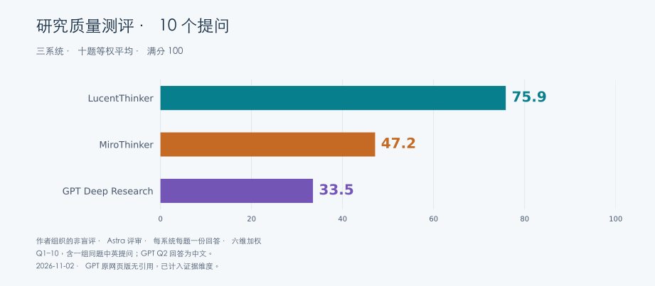

LucentThinker · 76.0
完整回答有效之处
- 正确扣除出口损失，给出不依赖负载曲线的太阳能收益上限。
- 给出多款5/10kWh产品、吞吐限制、无EV费率准入与实际询价步骤。
主要局限
- 月度Bristol模拟只给输出，无法复算1190/1740kWh捕获量。
- 保修容量下限不等于预期衰减轨迹；对模型依赖结论的“稳健”标签偏强。

LucentThinker 75.9 · MiroThinker 47.2 · GPT Deep Research 34.0
| 领域 | 任务 | LucentThinker | MiroThinker | GPT Deep Research |
|---|---|---|---|---|
| 能源 | 家庭电池经济性 | 76.0 | 49.0 | 39.0 |
| 健康 | 肌酸与认知表现 | 78.0 | 53.5 | 51.5 |
| 软件 | B2B 搜索架构 | 83.5 | 53.5 | 42.5 |
| 商业 | Costco 与 Walmart | 70.5 | 40.0 | 34.5 |
| 职业 | 三城工作机会 | 81.5 | 34.0 | 27.5 |
| 汽车 | 上海换购纯电车 | 68.0 | 37.5 | 18.0 |
| 能源 | 钙钛矿商业化 | 72.5 | 55.0 | 33.0 |
| 历史 | 郑和远航与海洋贸易 | 82.5 | 55.5 | 36.0 |
| 贸易 | 欧盟关税与中国电动车 · 中文提问 | 70.5 | 44.0 | 28.5 |
| 贸易 | 欧盟关税与中国电动车 · 英文提问 | 75.5 | 49.5 | 29.5 |
需求覆盖 20% · 事实与数值 25% · 证据与追溯 20% · 推理与边界 20% · 决策可用性 10% · 组织表达 5%
每维按 0–5 分评价，按权重换算为百分制，再对任务取平均。评审完整阅读回答并抽核关键事实与计算。 完整方法与限制
满分 100 · 作者组织的 Astra 非盲评 · 每系统每题一份回答
| 权重 | LucentThinker | MiroThinker | GPT Deep Research |
|---|---|---|---|
| 标准权重 | 75.9 | 47.2 | 34.0 |
| 剔除证据维度，其他维度归一 | 76.6 | 51.4 | 37.8 |
| 六维等权 | 77.7 | 49.3 | 37.8 |
| 更重事实与证据 | 74.6 | 44.0 | 31.0 |
| 更重决策可用性 | 76.8 | 48.7 | 35.8 |
| 问题组 | LucentThinker | MiroThinker | GPT Deep Research |
|---|---|---|---|
| 英文提问 Q1–4 | 77.0 | 49.0 | 41.9 |
| 中文提问 Q5–8 | 76.1 | 45.5 | 28.6 |
两组主题不同，组间分差同时受到题目内容影响。同题比较见下方 Q9/Q10。
| 系统 | 中文提问 | 英文提问 | 英文 − 中文 |
|---|---|---|---|
| LucentThinker | 70.5 | 75.5 | +5.0 |
| MiroThinker | 44.0 | 49.5 | +5.5 |
| GPT Deep Research | 28.5 | 29.5 | +1.0 |
每种语言仅一次回答，这些分差描述样本中的变化。Q9/Q10 的详细评审提供具体依据。
三方都认为给定平价电价下太阳能电池难以回本。G能列出具体产品和正确的基线能源账，但回收期与离峰收益出现直接算术错误，情景边界也较弱。L的全年收益上限、保修与无EV限制更完整。M存在损耗和NPV引证问题，同时其折现与后续模拟步骤仍较G充分。
| 维度 | LucentThinker | MiroThinker | GPT Deep Research |
|---|---|---|---|
| 需求覆盖 | 4.5/5 覆盖5/10kWh、现状、损耗、出口机会成本、具体产品、保修吞吐、VAT和并网；也照顾无EV限制。 | 3/5 覆盖主要经济维度和数据需求，但缺少可选择的具体5/10kWh产品/吞吐条款，DNO、安装与并网规则覆盖不足。 | 3/5 回答两种容量、维持现状、产品、损耗、出口成本和离峰，但UK规则只笼统说VAT为零，缺截止日期、并网与安装条件，也未落实无EV费率准入及产品保修吞吐。 |
| 事实与数值 | 3.5/5 基线£523.80、9.3p/充入kWh与£217.62太阳能收益上限可复算；将保修70%下限直接说成平均85%输出的必然含义不准确，部分收益区间并无明细模型。 | 2/5 把充入和放出kWh的价值混用，离峰算式没有实际计入1/效率；线性100%到70%被称为1.5–2%/年也不一致。这些不改变平价太阳能不划算方向，却削弱精细比较。 | 1.5/5 基线进口3240kWh、出口2340kWh和9.3p/充入kWh正确。5kWh回收期及10kWh离峰乘法严重错误，后者把理论收益高估约2.7倍。5kWh节省和净账单也与自己列式不一致。 |
| 证据与追溯 | 3/5 并网/VAT/设备规格有官方或厂家来源，但成本、保修和2026市场报价大量依赖经销商指南，月度模拟结果无输入表或计算附件。 | 2/5 有VAT等官方链接，但改变购买结论的Bristol Flux +£1100 NPV并未得到所引Reonic网页支持。多数收益依据泛用营销计算器，欠同家庭参数的可追溯测算。 | 1/5 所交付文件仅列来源类别，没有报价出处、厂家文件、费率链接或脚注映射。型号名可继续检索，因此保留少量分数。用户已确认网页版原回答也没有引用，因此该缺口同时存在于原回答与保存文件。 |
| 推理与边界 | 4/5 以全年剩余电量建立上限，稳健地区分太阳能与套利；但把增量£50列为年度数据可推出的稳健结论，实际仍依赖时序。套利未完整比较同一ToU下无电池基线与剩余日间电量成本。 | 2.5/5 理解出口机会成本、季节性、折现和复杂费率风险；但未给数学上限，模糊地叠加太阳能与每日套利价值，且“接近盈亏平衡”措辞与22–50年回收期张力大。 | 2/5 理解出口机会成本及夜充占用日间容量，但按340次太阳能循环估算缺季节性依据，把10kWh捕获全部余电和所有结论稳健说得过满。未建立同费率无电池基线或区分进口节省与出口套利。 |
| 决策可用性 | 4/5 能直接指导查电价、半小时数据、询价、吞吐保修与DNO；具体5kWh备电建议仍需负载功率/备电接线和停电时长验证。 | 3/5 建议12月数据和个性化模拟有用；无EV费率只提示检查资格，未落实当前可用方案，18–36个月行动却写赶2027年3月截止也有时间错位。 | 2/5 提出具体费率和个人半小时数据需重算，但未给可执行模拟步骤、所需报价信息或改变结论的门槛。套利错误使用户无法据此判断更换费率后的选择。 |
| 组织表达 | 4.5/5 先给结论与表格，再展开假设与验证缺口，较易追踪。 | 3/5 分层清楚但重复场景与推荐较多，区间口径摇摆且HTML标记使阅读负担上升。 | 3.5/5 章节简洁、公式可见，便于定位主要判断。充入/放出、节省/成本和寿命/保修措辞偶有混淆。 |
2,340 × 9.3p = £218/year
复算为£217.62；即使捕获全部年出口也难覆盖数千英镑资本支出，提供稳健方向。
原文第 98 行Using a monthly Bristol solar profile
正文未展示月度生成/负载数据、调度约束或计算附件；110/160英镑是情景估计而非可重现模拟。
原文第 104 行A warranty that guarantees 70% at year 10 implies an average of about 85% output
85%可作为线性保守假设，不能由保修下限推出预期实际衰减；两者都使用了这个简化。
原文第 78 行9.3p per kWh of <em>discharged</em> energy
9.3p对应充入1kWh；放出1kWh应为27−15/0.9=10.333p。错误约10%，不推翻“不买”的基础结论。
原文第 90 行30–34p − 14p
报告已承认1kWh放电需1.11kWh充电，却仍只减14p；应减15.56p，得到14.44–18.44p。
原文第 211 行positive</em> NPV of around £1,100 over 10 years
已打开所引Reonic全文，未见Bristol个案、5/10kWh现金流或£1100 NPV，是能改变购买决策的错配引证。
原文第 235 行3–5%
明确折现的价值：即便简单回收期看似接近寿命，晚期收益现值仍较低。L仅给未折现10年净额。
原文第 169 行half‑hourly or hourly data
要求用个人数据与实际费率模拟，方向可执行。
原文第 443 行about 3,240 kWh are imported
4500−3600×35%=3240，出口2340，净电费£523.80可复算。
原文第 7 行Net saved ≈(27×0.9 – 15)≈9.3 p per kWh stored
正确计入出口机会成本和往返损耗。
原文第 11 行≈40–50 yr simple payback
其£3500–4500成本、£160–180年节省给出19.44–28.13年。仍超过典型保修期，但不是40–50年。
原文第 19 行~£4.40 (10×16p) – about £1,600/yr
10×16p=£1.60，年£584。按90%效率和每日电池输出10kWh算约£539，均远低于£1600。
原文第 26 行≈ £360 (savings ~£160)
所列1440×0.27−1600×0.15=£148.80，净账单£375。该局部舍入不如离峰错误重要。
原文第 11 行charging fully at night means the battery can’t absorb midday sun
指出两种用途争用容量，避免完全忽略调度冲突。
原文第 26 行All these conclusions are robust given the stated prices and tariffs
太阳能方向可用上限支持，离峰选择和容量收益则需要时序、费率准入、报价，不能全部只由年度总量推出。
原文第 32 行Manufacturer and installer data; UK cost guides
没有具体厂家文件、价格日期或对应URL，无法逐条追踪。此问题直接计入证据维度。
原文第 34 行2,340 × 9.3p = £218/year
L提供无负载曲线亦可成立的太阳能节省上限，三方中最清晰。
原文第 98 行3–5%
M明确讨论折现，G只给不折现总额。旧M的NPV错配仍保留在原评审。
原文第 169 行| 核查对象 | 状态 | 结果 | 来源与访问范围 |
|---|---|---|---|
| 平价太阳能收益上限 | 有支持 | 2340×(0.9×0.27−0.15)=£217.62/年；无负载数据也可建立上限。M区间上沿£250超过该假设下全捕获上限。 | 按用户输入和90%效率复算 本地算术核查；非在线来源 |
| Reonic支持10kWh Flux 10年NPV +£1100 | 证据缺口或错配 | 读取全文：页面讨论电价类型和安装商选择，没有该Bristol模型、£1100或NPV计算。 | Solar Battery Tariffs UK 2026: The Installer's Comparison Guide 全文读取；页面可能更新，不能由此推断故意捏造 |
| 独立住宅电池安装可享节能材料税率优惠 | 有支持 | HMRC说明2024年2月起合条件电池安装纳入优惠，含独立储能；支持报告把合条件安装税收列入考虑。 | HMRC VENSAV3061 — Electrical storage batteries 已读取网页原文相关段落；未核验全部链接 |
| 2026具体安装价格、GivEnergy支持状态、Flux区域价格 | 未核实 | 未逐项核验这些实时事实，不据记忆否定2026陈述；它们仍需报价、厂家和费率原件补核。 | Octopus Flux（需补核具体费率） 本轮未阅读全文核验区域价格 |
| 无EV家庭能否采用所举Octopus Go | 证据缺口或错配 | 官方准入要求家中充电的电动车。G列Go却未提示此限制，无法直接适用用户情境。 | Octopus Go — Joining requirements 2026-11-02读取当前官方页面。未取10月29日存档，判为适用性缺口，不声称期间政策有变化 |
| 回收期和离峰收益算术 | 已确认错误 | 3500/180至4500/160约19.4–28.1年。10×£0.16×365=£584，非£1600。正确的平价太阳能上限约£217.62/年仍支持先维持现状。 | G报告第19、26行及用户输入的本地复算 本地独立计算 |
| Enphase IQ 5P产品保修和价格 | 未核实 | 厂家页面403，未确认报告的具体装机报价与保修条件。访问失败不证明规格或价格虚假。 | Enphase IQ Battery 5P 访问失败403 |
L对直接试验、亚组反证与实际适用性处理最完整，原有Xu终点误读仍保留。G能清楚介绍具体荟萃结果和严重缺眠研究，但遗漏123人随机试验及统计校正，素食者脑储备与日常收益推断过强。M覆盖更广但有来源错配和高剂量外推。M与G总分接近，G建议较克制、表达更清楚，不能据小分差判断M各方面均优于G。
| 维度 | LucentThinker | MiroThinker | GPT Deep Research |
|---|---|---|---|
| 需求覆盖 | 4.5/5 完整覆盖38岁素食者、偶尔缺觉、RCT与荟萃、日常意义、剂量和安全。 | 4/5 各子问均涉及，含素食脑肌酸、随机试验、法规、日常与安全；没有真正紧扣用户只是偶尔短睡的实践边界。 | 3/5 覆盖年龄、素食、缺眠、荟萃、日常意义、剂量与安全，也给出具体合并效应。但没有讨论123人Sandkühler试验、其素食亚组反证及荟萃统计校正，未充分比较与用户最相关的随机证据。 |
| 事实与数值 | 3.5/5 主要Sandkühler样本、剂量、p值与素食亚组结果经原文支持；但Xu attention/processing scores与time混淆构成确认错误。 | 2.5/5 最大RCT大方向正确，但混入其未测的前额叶激活，年轻年龄组口径变化和研究身份错配；多处小效应转换与“行为明显”表述过度。 | 2.5/5 Rae的45人、5g/日6周与显著性、Avgerinos综述规模和Prokopidis原始效应量基本准确。2024缺眠试验剂量应为0.35g/kg，报告写约0.3g/kg。把素食者脑肌酸较低当作已知事实缺乏直接支持，合并SMD也不能直接给出多记几个项目。 |
| 证据与追溯 | 4/5 给出具体DOI/论文链接、效应量与访问限制，优于泛首页引证；校正后Prokopidis精确值仍来自二手总结，诚实标注但可靠度有限。 | 2/5 重要RCT链接指向另一篇元分析；多个关键研究仅指PubMed/Springer首页，不能按标题复核。也有真实官方委员会和原始睡眠实验链接，不应一概否定。 | 2/5 作者年份、样本和效应量可定位多项文献，获得一定追溯分。但没有URL、DOI或完整书目，部分2024综述身份不清，安全性没有对应具体来源，且未交代作为主要依据的Prokopidis结果后续校正。 |
| 推理与边界 | 3.5/5 讨论单位分析错误、脑与肌肉肌酸差别以及极端睡眠剥夺外推，链条较强；“不会注意到”“任何变化都在噪声内”等断语超过无现实工作试验能证明的范围。 | 2.5/5 解释监管门槛与统计显著不同，承认素食优势混合证据；但在此基础上仍称素食者更可能获益，并把极端剥夺的小试验推广到<3–4小时睡眠。 | 2.5/5 能区分小样本实验、严重缺眠和日常工作，并明确现实获益不确定。但用11–31岁亚组直接推断38岁用户，膳食摄入低被连到脑储备低，且没有解释较大直接试验与早期素食阳性试验的冲突。 |
| 决策可用性 | 4/5 不鼓励以高剂量代替睡眠，标准低剂量仅作为自愿尝试并提示肾功能化验解释，整体更适配用户。 | 2/5 常规3–5g方案和观察方法具体，但14g早晨急性服用作为针对用户建议没有足够临床外推依据；主观自测也易受期待和练习效应影响。 | 2.5/5 可选5g/日、温和预期和肾病先咨询的建议基本可用，未像M给出缺眠早晨14g急救协议。但把肌肉研究的15–20g加载作为认知试用的合理路径，缺少相应效果依据，也未给评估期限、停止条件或控制主观期待的方法。 |
| 组织表达 | 4.5/5 短试验表与要点易读，结论明确；少数绝对语气应改为证据不足。 | 3/5 结构齐全，反复多层“key insight/implication/scenario”降低密度；最强建议与保守摘要不一致。 | 4/5 分组、剂量、安全和结论清晰，篇幅集中。效应大小部分反复用不具测量依据的生活例子解释SMD，容易让读者误当作观察到的实际收益。 |
Vegetarians did not benefit more than omnivores
原始123人RCT明确支持；对用户的关键亚组判断可靠。
原文第 14 行That internal inconsistency is itself a warning
原文attention scores、processing speed scores不显著，而attention time和processing speed time显著；勘误专门补了scores，不能说这种差别本身是矛盾。
原文第 29 行some primary sources were available only as abstracts or partial text
明确说明哪些全文没拿到以及校正效应量来自二手，便于使用者评估证据层级。
原文第 127 行Effects of that size are below what you would notice
缺现实工作结局只能支持不确定，不能确保所有人或长期累计都不可感知。
原文第 85 行does not mean <strong>no effect exists</strong>
正确区分缺少足够证据与不存在效应，相比L部分绝对措辞更审慎。
原文第 158 行https://pmc.ncbi.nlm.nih.gov/articles/PMC11275561/
该PMCID属于Xu 2024元分析，非Sandkühler 2023试验；影响最重要RCT的可追溯性。
原文第 396 行you are slightly more likely to benefit than a meat‑eater
紧前87–91行承认没有素食特异优势与脑肌酸差异，未新增证据便给概率方向判断。
原文第 93 行≈0.2 g/kg creatine monohydrate
313行将适用条件写成all-nighter或<3–4h睡眠；小型全剥夺实验不能直接支持此常规实践协议。
原文第 319 行six randomized trials (281 people)
Avgerinos原始摘要确认六项试验、281人，支持其对综述规模和有限认知信号的基本概括。
原文第 6 行SMD≈0.29; 95% CI 0.04–0.53
与Prokopidis原始摘要一致。该数值是原始分析结果，不能替代后续校正及方法限制。
原文第 6 行45 healthy vegetarian adults
Rae原始摘要支持45名素食者、5g/日6周及工作记忆和推理的阳性结果。
原文第 14 行these are small, short-term studies
明确标出实验规模、短期性和高单次剂量，避免把严重缺眠结果完全等同于常规认知增强。
原文第 18 行it’s uncertain whether they translate to meaningful everyday benefits
区分统计改善与现实生产率，较直接保证日常收益或直接保证无人能感知更合理。
原文第 36 行who start with lower brain creatine levels
膳食摄入低不证明脑储备低。直接MRS研究在后扣带皮层未发现素食者较低，最大认知RCT也没有素食优势；报告未处理这些反证。
原文第 14 行about 0.3 g/kg, roughly 20 g for a 70 kg person
原文方案是0.35g/kg，70kg对应24.5g。报告正确识别高剂量方向，但把具体试验剂量低报约14%，属于局部事实误差。
原文第 18 行not all studies of vegetarians replicate such large effects
仅泛称未重复，未介绍123人、约半数素食者的预注册交叉试验及无素食优势，无法充分完成早期阳性与较大RCT对照。
原文第 14 行remembering a couple extra items on a list or solving a few more puzzles correctly
合并SMD没有固定量表单位。未给原始标准差、具体任务或工作结局，不能据此换算额外项目数或可感知收益。
原文第 22 行if you are a healthy 38-year-old without creatine deficiency
紧前使用的年轻亚组是11–31岁，且本节讨论非素食者。可作间接参考，不能当作对38岁素食用户的直接分组证据。
原文第 12 行a reasonable approach (mirroring muscle-health studies) is a loading phase
报告自己承认来自肌肉研究，却未证明加载能改善本用户的认知或优于不加载方案，建议与认知目标未充分衔接。
原文第 28 行the 2024 review mentioned above found *no significant cognitive benefit*
正文没有给这篇2024综述的作者或题名，无法唯一识别。EFSA意见与系统综述不能不加说明地互换，故保持待核。
原文第 34 行Avgerinos 2018, Prokopidis 2023, Rae 2003, Gordji-Nejad 2024, Marshall 2025
作者年份确实提供可定位线索，但缺题名、期刊、DOI/URL及逐条对应。Marshall的2025在线发表和2026卷期可并存，不因年份写2025判错。
原文第 44 行| 核查对象 | 状态 | 结果 | 来源与访问范围 |
|---|---|---|---|
| 最大RCT与素食优势 | 有支持 | 原始论文支持123人、5g/日6周、八项探索任务未见效益和无素食优势；结论仍保留小效应可能。L描述更精准，M引用身份错位。 | The effects of creatine supplementation on cognitive performance—a randomised controlled study 已读取网页原文相关段落；未核验全部链接 |
| Xu摘要与正文相矛盾 | 已确认错误 | 正文区分评分与完成时间：前者不显著，注意时间SMD−0.31、处理时间−0.51显著；2025勘误补充scores。L据此指控矛盾不成立。 | The effects of creatine supplementation on cognitive function in adults 已读取原文相关结果与摘要，并读取2025勘误 |
| 2025勘误否定注意/处理速度效果 | 已确认错误 | 勘误将两处终点明确为scores，未推翻time结局；应与统计双重计数的另一项批评区分。 | Corrigendum: The effects of creatine supplementation on cognitive function in adults 已读取网页原文相关段落；未核验全部链接 |
| M的Sandkühler链接身份 | 证据缺口或错配 | PMCID PMC11275561实际题名为Xu元分析。直接PMC打开遇验证码，检索记录和对应Frontiers DOI确认身份；不把访问失败当作虚假。 | The effects of creatine supplementation on cognitive function in adults: a systematic review and meta-analysis PMC打开验证码；搜索索引身份与出版社原文交叉对应 |
| 2026所有新试验/条例与校正精确效应量 | 未核实 | 本轮未逐一核对；不因2026时间或无法取全文判虚假。L披露二手校正估计的限制。 | Prokopidis authors’ reply（精确校正值需补核） 本轮未读取全文 |
| Rae早期素食者随机试验 | 有支持 | 原始摘要确认45名年轻素食者、5g/日6周、交叉设计和工作记忆/推理p<0.0001。G的这些具体信息准确。 | Oral creatine monohydrate supplementation improves brain performance: a double-blind, placebo-controlled, cross-over trial 2026-11-03读取PubMed原始摘要。 |
| Avgerinos综述规模与方向 | 有支持 | 六项试验、281人与有限短时记忆/推理信号均与摘要一致；其2018证据不能替代后来的直接随机结果。 | Effects of creatine supplementation on cognitive function of healthy individuals: A systematic review of randomized controlled trials 2026-11-03读取PubMed原始摘要。 |
| Prokopidis原始效应量与年龄分组 | 有支持，存在限定 | 原始摘要确有总体SMD0.29、95%CI0.04–0.53、老年0.88和11–31岁0.03。G准确转述原始值，但未交代校正，不宜视作截至2026的完整综合。 | Effects of creatine supplementation on memory in healthy individuals: a systematic review and meta-analysis of randomized controlled trials 已读取原始摘要；PMC全文遇验证码。 |
| Prokopidis校正及精确新效应量 | 有支持，存在限定 | 已读2026方法评论明确指出，处理非独立终点后总体记忆效果失去显著性，老年亚组除外。出版社检索摘要显示校正值0.19、CI−0.07至0.46，但作者回复全文访问失败，精确值本轮未独立全文核实。G缺少这一方法背景。 | Commentary: The effects of creatine supplementation on cognitive function in adults: a systematic review and meta-analysis 已读评论全文。作者回复DOI 10.1093/nutrit/nuac111及Liverpool仓库分别跳转失败/403、406；仅见出版社检索摘要。 |
| 与用户相关的较大直接试验 | 有支持 | 123人、约半数素食者、5g/日6周的预注册交叉试验保留小效应可能，但素食者未获更多收益。G全文没有介绍该试验，削弱其关键人群比较。 | The effects of creatine supplementation on cognitive performance—a randomised controlled study 2026-11-03读取原论文摘要及相关全文段落。 |
| 素食者脑肌酸必然较低 | 证据缺口或错配 | 直接MRS摘要显示素食者膳食摄入较低，但后扣带皮层总肌酸无显著组间差异（p=0.77）。该脑区研究不能概括全脑或所有个体，却足以说明G把低脑储备当成既定前提缺乏依据。 | Brain creatine depletion in vegetarians? A cross-sectional ¹H-magnetic resonance spectroscopy (¹H-MRS) study 2026-11-03读取原始摘要；未把单脑区结果扩大为全脑一致。 |
| 2024缺眠试验剂量 | 已确认错误 | 原文为15人、0.35g/kg、约21小时缺眠，70kg对应24.5g。G的样本和研究方向基本对，但写约0.3g/kg、约20g，低报具体试验剂量。 | Single dose creatine improves cognitive performance and induces changes in cerebral high energy phosphates during sleep deprivation 2026-11-03读取原始全文摘要、受试者与给药方法。 |
| 普通短睡的直接反证 | 有支持，存在限定 | 2026-10-14发表的8人交叉试验比较7天20g/日后3小时卧床限制，未发现认知获益，且承认统计功效不足。G未纳入这一截止前、较贴近用户短睡情境的结果；不能由此断言零效果。 | Effect of Creatine Supplementation on Cognitive Performance and Frontal Haemodynamics Following Acute Sleep Restriction: A Randomised, Double-Blind, Placebo-Controlled Crossover Pilot Study 2026-11-03读取原始摘要与方法段落，发布日期早于题目截止日。 |
| Marshall老年综述的证据类型 | 有支持，存在限定 | 六项研究中五项正相关、证据有限的描述正确。但其中只有两项双盲干预，四项为横断面膳食调查，G没有交代这种组成。2025在线与2026卷期不构成年份错误。 | Creatine and Cognition in Aging: A Systematic Review of Evidence in Older Adults 2026-11-03读取PubMed原始摘要与书目。 |
| EFSA认知健康声明结论 | 有支持 | 2024意见确认尚未建立肌酸补充改善认知的因果关系，支持G的总体表述。该意见明确不属于安全性正面评估，不能单独支撑G的安全段落。 | Creatine and improvement in cognitive function: Evaluation of a health claim pursuant to article 13(5) of regulation (EC) No 1924/2006 Wiley部分页面可读、后续403；转至PMC读取原始摘要和意见范围。 |
| 未命名2024综述与生活化效果换算 | 未核实 | 第34行无法唯一识别综述；第22行没有给量表标准差或原始项目差异。这些具体依据本轮不能确证，未据此声称所有研究或数字虚构。 | G report, lines 22 and 34 直接核对新交付全文；缺少足够具体来源。 |
G与L/M都建议Postgres起步并实测后迁移。G对运维和后过滤风险有基本认识，但权限停留在org过滤，未完成文档ACL设计，也把Qdrant已在2024年支持的单请求融合说成仍需外部实现。L的选择率、权限、版本和测试矩阵最完整。M虽有引证和容量错误，依然比G更多处理RLS、租户分区与权限测试。
| 维度 | LucentThinker | MiroThinker | GPT Deep Research |
|---|---|---|---|
| 需求覆盖 | 4.5/5 完整覆盖混合排序、权限、过滤、容量、写入一致性、恢复和小团队运维，并区分业务SLO与数据库延迟。 | 4/5 子问基本齐全，覆盖3个方案和迁移阶段；缺具体权限撤销语义、embedding/rerank端到端成本细拆。 | 2.5/5 按标题覆盖多数技术维度，但文档权限、RLS/DLS、撤销语义、恢复目标与五百万索引完整容量预算缺失。每次搜索必须尊重文档权限这一核心要求没有落地。 |
| 事实与数值 | 4/5 原始向量大小、过滤选择率和Postgres规则可核对，数量级有用；部分索引和RAM/磁盘口径混在同表，20–30%附加开销未按文本/ACL实际规模量化。 | 2.5/5 总体机制多正确，但OpenSearch float32公式写2×dim、文内pgvector 100–125GB与总结30–50GB冲突；将若干小规模低延迟直接外推到用户负载。 | 2/5 原始向量30.7GB正确，ANN后过滤和PG事务优势大方向成立。但Qdrant混合查询能力有已证错误，把50QPS搜索写成50QPS更新，及把Postgres描述为默认全图载入RAM也失准。 |
| 证据与追溯 | 4/5 大量具体官方文档、版本/issue链接，清楚标注线性外推与没拿到全文的项目；没有将公开benchmark直接当用户性能保证。 | 1.5/5 正文引用与链接标题明显错位：例如OpenSearch hybrid延迟引pgvector存储、RLS引云服务价格、HNSW更新引备份站点。数量多不能弥补关键断言无对应来源。 | 1/5 没有可定位文档、版本、基准环境或来源链接，正文还引用不存在的Table [44]。少量API/参数名可帮助检索，未按无URL直接归零。 |
| 推理与边界 | 4/5 从0.05%全局选择率推出分区，提出exact ground truth、分桶与并发更新，因果链强；未把小租户过滤后精确检索列为pgvector首要候选，64–256分区HNSW方案可能过早复杂化。 | 2.5/5 识别后过滤和双系统同步，建议实测是优点；开头先断定每查询只碰租户小集与轻松满足p95，后文才承认全局ANN后过滤问题，未解决便做充分性判断。 | 2.5/5 理解小团队双系统负担与基准依赖配置，条件性推荐比强行性能保证合理。但没有从2000租户/500万块推导选择率，也未区分候选召回与权限强制控制，后过滤CTE不能保证k个合法结果。 |
| 决策可用性 | 4.5/5 有阶段计划、基准矩阵、outbox/CDC和具体迁移条件。主方案已说明Postgres提交ACL后下一事务可见，Qdrant过滤由Postgres权限解析；但通用验收表的撤销≤5秒p95仍须针对异步路径明确硬性授权边界和失败关闭，不应仅靠延迟目标。 | 3/5 分阶段shadow query、备份恢复和迁移提醒有用，但硬件无统一容量预算，权限同步缺outbox/撤销失败模式，且迁移需“两项”问题触发缺业务依据。 | 2.5/5 建议测延迟、召回、写入和内存，给出300ms迁移信号。缺具体分桶真值、召回门槛、并发更新/权限撤销测试和同步失败恢复方案，难直接形成验收计划。 |
| 组织表达 | 4.5/5 表格和配置把重点串联，证据缺口明确；少数数量级推断偏肯定。 | 3/5 章节有组织但重复很多，精确数字与含糊保留意见并置，难分哪些是保证、哪些只是假设。 | 3.5/5 章节顺序清楚、较精练。对“native”“two queries or stages”、吞吐与并发的定义不稳定，容易误导实现。 |
2,500 chunks, or 0.05% of the corpus
2500/5000000=0.05%，并用官方过滤行为说明全局ANN风险，直接贴合用户情景。
原文第 14 行No public benchmark I reviewed matches
准确限制公开benchmark的用途，不把未验证负载说成已达到SLO。
原文第 196 行compute exact top-k per tenant and per ACL bucket
把ANN召回与人工相关性区分并用过滤后真值，能发现局部租户失效。
原文第 229 行For a 500K-chunk tenant with a 0.1% ACL filter, it is not.
这一例子只有500个合法候选；仅凭大租户总块数不能断言过滤后exact不可扩展。也应把此路径用于小租户初始方案。
原文第 155 行ACL revocations visible ≤ 5 s p95
主方案在第89、125行已有事务ACL/权威过滤路径。问题限于通用验收指标：异步撤销传播的5秒p95不能替代硬性权限边界，应明确最终校验或授权快照语义；不能据此判定主方案已发生数据泄漏。
原文第 240 行support for partitioned tables
主动列出推荐组合尚未验证的兼容性，避免把架构草案伪装成已部署结果。
原文第 334 行pgvector’s ANN index does not understand those predicates
正确识别RLS安全过滤与ANN召回并非同一问题；后文提出分区方向可取。
原文第 91 行keeps you comfortably under your 300 ms p95 budget
没有实际租户索引布局/选择率/更新压力下的测量，不能从1M一般延迟缩小到逻辑租户集后保证SLO。
原文第 33 行1.1 * (2 * dimension + 8 * m)
段落说默认float32却用2字节；默认每维4字节。且m=16代入该写法仅17.6GB/5M，和同句约30GB不自洽。
原文第 173 行30–50 GB of working set
158行给pgvector原始+索引100–125GB，此处忽略引擎差异归纳30–50GB，未交代冷数据、索引常驻和压缩假设。
原文第 179 行Hybrid queries typically add only 6‑8 % latency
所跟[39]为pgvector容量文章，[43]为pgvector过滤LinkedIn；不能支持OpenSearch混合查询6–8%这个数字。
原文第 61 行30.7 GB
5000000×1536×4=30.72GB，裸向量数量级正确。
原文第 20 行benchmarks are highly sensitive to hardware
正确认识基准差异，未将所有公开低延迟直接保证为用户SLO。
原文第 47 行Does not have a single-query hybrid score
Qdrant 1.10于2024年已提供Query API服务端稀疏/稠密融合。多阶段执行不意味着必须多次外部请求。
原文第 9 行find nearest K ignoring org, then filter to K results
先全局取K再过滤无法保证K个合法结果。需要继续扫描或针对合法候选搜索，不能将该CTE称为保证。
原文第 14 行Enforce org filtering in queries
推荐只落实org过滤，缺文档ACL、身份注入信任边界、RLS/DLS与撤销路径。用户明确要求每次满足两层权限。
原文第 55 行50 QPS updates (in addition to reads)
题设仅提供峰值50次搜索/秒，更新频率未量化。将其复制为写入负载会误导压力与容量规划。
原文第 27 行Table [44]
所交付文件没有表44或引用44的映射，读者不能核对所谓OSS/Cloud对照。
原文第 35 行index build/update time
有实际测量方向，包含索引建立和删除/写入成本，而非只谈静态查询。
原文第 49 行compute exact top-k per tenant and per ACL bucket
L以过滤后真值与ACL分桶检测局部召回失败，明显比G泛测recall更可执行。
原文第 229 行Row‑Level Security (RLS)
M至少讨论数据库强制权限层和文档ACL，G主要以应用org过滤代替权限架构。
原文第 90 行| 核查对象 | 状态 | 结果 | 来源与访问范围 |
|---|---|---|---|
| pgvector在ANN扫描后过滤，10%选择率默认约4结果 | 有支持 | 官方README确认后过滤示例与迭代扫描；L用其推出全局租户选择率风险有依据，M的开头性能保证则不能由此推出。 | pgvector README — Filtering 已读取网页原文相关段落；未核验全部链接 |
| 5M×1536容量算式与OpenSearch精度 | 有支持 | pgvector官方每向量4d+8，5M为30.76GB；OpenSearch官方默认float每维4字节。L原始量级正确，M第173行2d不适用于所称float32。 | OpenSearch Documentation — Vector quantization 已读取网页原文相关段落；未核验全部链接 |
| pg_search安装门槛 | 有支持 | 官方文档支持superuser、pgvector依赖、PG15+预编译和shared_preload_libraries要求；L对托管实例限制的提醒有用。 | ParadeDB — Self-Hosted PostgreSQL 已读取网页原文相关段落；未核验全部链接 |
| 已达用户50QPS/p95<300ms | 未核实 | 没有任一报告提供在用户真实数据上的运行日志；架构建议不是验收结果。L明确其为待测；M“通常轻松满足”不能当已证事实。 | 用户工作负载待基准验证 尚无用户实测数据；不能从报告推断内部测试次数 |
| 截至2026年Qdrant仍需外部合并dense/sparse查询 | 已确认错误 | 2024-07-01发布说明已明确单Query endpoint及服务端稀疏/稠密RRF融合，时间早于题目截止。直接反驳G第9行。 | Qdrant 1.10 — Universal Query, Built-in IDF & ColBERT Support 已读取原始来源相关全文段落 |
| Qdrant当前单请求融合示例 | 有支持 | 官方Hybrid Queries提供prefetch加fusion/rrf的单请求配置，确认多阶段可以由服务器一次请求完成。 | Qdrant — Hybrid and Multi-Stage Queries 已读当前文档，并用2024发布说明固定时间边界 |
| 裸float32大小 | 有支持 | 5M×1536×4=30.72GB。该结果不包含表、HNSW副本、文本、ACL、WAL和HA复制，不能单独决定内存。 | G第20行容量本地复算 本地独立计算 |
| 12ms/8ms等公开p95与12分片建议 | 未核实 | 报告未给基准名称、链接、硬件、召回率或出处，本轮无法把这些数字对应到可重复实验，不判定其必然虚假。 | G第23、47行未定位基准 缺对应来源与配置 |
G正确识别Walmart FY2024利润受前一年法律与重组费用基数影响，这一点优于M。但G混用净销售/总收入，未完成三年现金流和统一ROIC，且把Walmart主要库存方法说成FIFO。L完成度和数据可追踪性最高，同时其原有回购及53周口径错误保留。M和G都有重大缺口，G的更短表达没有弥补缺失计算。
| 维度 | LucentThinker | MiroThinker | GPT Deep Research |
|---|---|---|---|
| 需求覆盖 | 4.5/5 各公司FY23–25增长、利润、会员、库存、现金流、ROIC均给表、定义与判断；ROIC用年末资本而非平均，明确但可比性仍有限。 | 2.5/5 话题齐全但没有完成要求的三年现金流/投入资本/ROIC比较，多次让用户自行提取10-K和计算。 | 2/5 涉及所有主题但未完成三年并列表，Walmart FY25现金流只猜超过350亿，库存采用猜值，ROIC用ROA和公司ROI代理。缺统一NOPAT/平均投入资本计算及租赁/现金口径。 |
| 事实与数值 | 2.5/5 多数核心三年报表数正确，一次性费用识别较好；但53周错调Walmart报表增长、FY25回购误用约70亿而核查值为44.94亿并颠倒FCF覆盖结论，是高影响错误。 | 1.5/5 Walmart非经营损益误加回营业利润、Costco毛利与会员利润占比错误，库存现金数据错期，构成多项核心财务错误。 | 1.5/5 Costco销售、营业利润、FY25周转数量级及Walmart一次性费用基本正确，但Walmart FY25净销售写成总收入，增长错用，6.1%称跑赢6.7%，营业利润增速1.6%与所列金额不符，FIFO及FCF率方向也有错误。 |
| 证据与追溯 | 3.5/5 主要用10-K且公式可查，给二手来源限制；仍有原始材料可直接核对却使用二手金额的问题，精确结论需重算。 | 2/5 有官方文件线索，也指出会员与其他收入不可混同；但核心表格未回到年报复核，引用中多个SEC accession/期别不稳，数据冲突仅称分类差异。 | 1/5 只有泛称官方年报，无具体年份文件链接、表页或数字出处。公司/财年信息尚可指向待核材料，但需要读者重新完成来源定位。 |
| 推理与边界 | 3.5/5 将收入/利润/资产负债韧性分开，比较Sam’s与Costco以及历史下行反证有价值；把投资性capex升高简单视作收益质量红旗、未经平均资本/同口径租赁分子调整就称ROIC优势在每种定义均稳健，略过强。 | 2/5 认识业务混合、库存周转和会员黏性；却漏主要2023一次性费用，把利润增长归为经营，会员接近纯利润叙事过强，ROIC数值也不从其公式推出。 | 2/5 可区分一次性费用与经营进步，也列出可能推翻Costco结论的条件。但用未完成的ROIC、混合毛利口径和“Costco更高利润率”推断韧性，结论链未成立，会员费近乎纯利润也未处理相应成本。 |
| 决策可用性 | 4/5 给出续费率、FCF转换、库存等反证指标；部分阈值已接近或跨过当年值，应说明连续期间和原因。 | 2/5 列了监控指标与进一步尽调路径，但把原请求本身列为待用户完成任务；且推荐错误营业利润调整。 | 2/5 监测续费、数字业务和品类变化有方向，缺阈值、压力情景和关键财务模型。用户需要重新提取/计算核心比率后才能比较。 |
| 组织表达 | 4/5 并列表清楚、弱点声明具体；有较多重复结论，表中口径应进一步统一。 | 2.5/5 标题与分项清楚，但公式出现转义/斜体断裂，长文重复而缺实际并列表。 | 3/5 分节和末尾要点方便浏览，但sales/revenue与ROA/ROI/ROIC混用，正文和摘要年份口径不一致。 |
Free cash flow
对双方三年的CFO/Capex/FCF给表（118–121行），用户可以直接复算；M未完成Costco这些数字。
原文第 120 行opioid-related legal settlements
2023法律33亿+重组8亿费用在官方10-K有对应说明，正确解释2024跳升的部分基数效应。
原文第 62 行52-week growth was closer to **3.0%**
Walmart官方演示明确额外周只影响4-5-4 comps、其他指标不受影响。不能将报表净销售5%再按53周缩到3%。
原文第 28 行not its dividend plus roughly
Walmart FY25现金流回购44.94亿美元，分红66.88亿，合计111.82亿，小于FCF126.60亿。该结论实际相反。
原文第 228 行That shows both sides
提供Costco历史业绩下降而续费维持、Walmart收入更防御的反证，不只单边讲会员优势。
原文第 304 行Use average balance sheet values
平均资本/存货的原则正确；但正文没有贯彻为完整可复算系列。
原文第 84 行full CFO and capex numbers for each year require direct 10‑K extraction
用户已要求完成三年比较，正文把核心数据提取留作未来工作；这是实际交付缺口。
原文第 374 行adds back
Other gains/losses本来就在营业利润以下，不能再加回营业利润来构造core operating margin。
原文第 261 行essentially <strong>all of Costco’s pre‑tax profit</strong>
FY25会员费53.23亿，而营业利润103.83亿，税前利润还更高；并非几乎全部税前利润。会员收入也不等于可归属净利润。
原文第 294 行$61.6B per official balance sheet
FY25 Walmart年报存货564.35亿，非616亿；不能将冲突简单称为分类差异。
原文第 329 行standard cost for most merchandise inventories
Costco FY25年报说美国库存按cost method/LIFO，不能把“cost method”改成standard cost后认为少受LIFO影响。
原文第 75 行~$50–60B range
以报告自身营业利润约104亿乘低20%税率，除500–600亿投入资本仅约13–16%，不能直接推出紧后行“high-teens or higher”；未给平均资本明细。
原文第 402 行~$3.3B opioid settlement and ~$0.8B international restructuring charges
抓住2024营业利润跃升的基数效应，M原文缺失这一核心解释。
原文第 37 行turnover ≈13×
Costco FY25 COGS约2399亿/平均存货约184亿≈13次，数量级可靠。
原文第 24 行~$681.0B (FY2025)
这里标为net sales，实际6810亿为总收入，净销售6745.38亿。与6426.37亿净销售相除得到错误5.9%。
原文第 7 行(6.1%) outperformed FY2023 (6.7%)
同一段给出的6.1小于6.7，与outperformed直接冲突。
原文第 9 行growth slowed to +1.6% year-on-year in FY2025
所列营业利润29.348/27.012−1=8.65%，非1.6%。
原文第 14 行isn’t tabulated here but would exceed $35B
FY25现金流公开可得，报告没有完成这一指定财年的数据提取，使用推测替代。
原文第 29 行Costco’s trailing ROIC could easily exceed
没有给两公司三年同口径ROIC、NOPAT或资本基数，无法由ROA比较直接完成ROIC问题。
原文第 32 行Walmart (primarily FIFO)
年报中Walmart U.S.主要使用RIM/LIFO，Sam’s U.S.多数库存也用LIFO，FIFO不能概括主要业务。
原文第 39 行Costco’s FCF per dollar of revenue is slightly lower
FY25 Costco FCF/总收入约2.85%，Walmart约1.86%，方向相反。G没有列FCF便给出了错误比较。
原文第 29 行Costco’s higher margins provide a cushion
前文列的营业利润率和毛利率均为Walmart更高。这里没有说明改成净利率或其他口径便反转比较，不能直接作为韧性依据。
原文第 42 行Official annual reports and filings
没有具体年报链接、表页或来源映射。只对交付文件的可追溯性评分。
原文第 58 行Free cash flow
L三年表给双方CFO/Capex/FCF和比率，且有ROIC分子分母，完成度高于G。
原文第 120 行predominantly operational rather than one‑off
M的经营性归因忽略主要基数效应，G在此处的解释更准确。此条沿用原评审问题，不修改旧分。
原文第 264 行| 核查对象 | 状态 | 结果 | 来源与访问范围 |
|---|---|---|---|
| Walmart额外周影响报表销售 | 已确认错误 | 官方FY25 Q4演示第22页明确：额外周只影响4-5-4可比销售，其他指标不受影响。因此约3%调整不成立。 | Walmart FY25 Q4 earnings presentation — Comparable Sales Reporting Calendars 已读取网页原文相关段落；未核验全部链接 |
| Walmart现金分配、库存和损益分类 | 已确认错误 | FY25现金流回购44.94亿、分红66.88亿，合计低于FCF126.60亿，反驳L。期末库存564.35亿、现金90.37亿，Other losses列于营业利润以下，反驳M相关口径。 | Walmart FY2025 Form 10-K 已读取网页原文相关段落；未核验全部链接 |
| Costco毛利、会员利润占比与LIFO | 已确认错误 | FY25毛利率11.12%；会员费53.23亿、营业利润103.83亿，非几乎全部税前利润；美国库存用LIFO。支持L主要口径，反驳M对应陈述。 | Costco FY2025 Form 10-K 已读取网页原文相关段落；未核验全部链接 |
| Costco奖励被列为销售抵减 | 有支持 | 年报披露FY25奖励净减销售30.07亿美元，支持L对会员费并非无成本的提醒；净费/营业利润仍只是分析代理，不是部门利润。 | Costco FY2025 Form 10-K — Revenue Recognition 已读取网页原文相关段落；未核验全部链接 |
| 跨公司ROIC精确差距 | 未核实 | L提供年末资本公式与结果，M未实际列平均资本；本轮未完整重建六个年度租赁一致的NOPAT/平均投入资本，故不确认“恰好两倍”或每种口径均稳健。 | 报告公式与口径审查 未独立重建完整财务模型 |
| Walmart净销售、营业利润增长及库存计价 | 已确认错误 | FY25净销售6745.38亿，总收入6809.85亿。营业利润293.48/270.12−1=8.65%。Walmart U.S.与Sam’s主要用LIFO。支持对G混口径及FIFO叙述的纠正。 | Walmart FY2025 Form 10-K 已读取原始来源相关全文段落 |
| G未提取的Walmart FY25现金流 | 有支持 | 年报列CFO364.43亿、资本支出237.83亿、FCF126.60亿，表格同时给FY23–25，因此该缺口可由现有原始资料完成。 | Walmart FY2025 Form 10-K — Free Cash Flow 已读取原始来源相关全文段落 |
| Costco FCF率低于Walmart | 已确认错误 | Costco FY25 CFO133.35亿减capex54.98亿得FCF78.37亿，除总收入2752.35亿约2.85%。Walmart约1.86%，G方向相反。 | Costco FY2025 Form 10-K — Cash flows 已读取Costco与Walmart原始现金流并独立复算 |
| Costco完整三年现金流和FY25库存周转 | 有支持 | Costco年报支持G的FY24/25 CFO及FY25 capex数量级，2398.86亿成本/平均库存183.815亿≈13.05次，支持其局部正面判断。 | Costco FY2025 Form 10-K 已读取原始来源相关全文段落 |
本题L明显领先，M与G均需重做关键现金账。G比M多给出了名义金额表，但年终奖计税、月年勾稽、公积金累计均发生实质错误，租房扣除与翻转阈值没有完成，因此低于M的既有评分。L主要账目可复算且有临界租差，仍保留原评所指出的局部错误和房源核实风险。
| 维度 | LucentThinker | MiroThinker | GPT Deep Research |
|---|---|---|---|
| 需求覆盖 | 4.5/5 覆盖社保上下限、公积金、租金扣除、两种奖金税法、年度与月均到账、租金和奖金敏感性；明确用十月规则做完整年度稳态估算。 | 2/5 谈到全部主题但主动不列月到账、年度税后额及两种奖金税额；无法完成用户核心现金比较任务。 | 2/5 列出三城、两种奖金税法及租金表，但遗漏明确要求的住房租金专项附加扣除，没有完整的扣房租年度现金表和反转阈值。公交40分钟约束被扩成驾车，通勤样本未落实。 |
| 事实与数值 | 4/5 按其输入复算工资个税、奖金税与年度现金基本成立；但并入奖金后深圳领先额写错。奖金跨档分析给出近似交点，却未完整解释税档跳跃。 | 1.5/5 35,000×14%×80%=3,920，不能覆盖7,500–8,000租金；杭州和成都五险一金占比也与其给出的公式不符；开头公积金已封顶与后文未封顶矛盾。 | 1/5 奖金速算扣除重复12次，杭州年度合计不等于自身月收入加奖金，公积金余额不等于自身7%+7%基数累计。深圳医保基数与正式2026公告不符。 |
| 证据与追溯 | 3.5/5 关键税收、各地基数有可定位政策链接，租房行情多为平台均价/挂牌与自媒体，尚不能证明同品质独厨独卫房源和40分钟门到门。 | 1/5 大量引用与主张跨主题错配，例如用杭州人才补贴支持奖金税法，用杭州失业险支持深圳公积金基数；无法靠引用数量弥补。 | 0.5/5 保存文件没有具体政策文号、日期链接或可定位租房样本，仅泛称链家/贝壳。用户确认网页版原回答亦无引用，该项按交付物实际可追溯性评分。 |
| 推理与边界 | 4/5 现金、公积金入账与提取明确分开，不重复计入财富；以租差阈值而非城市印象比较。奖金跨档仍需分段，不能宣称只有房租和申报基数会改变结论。 | 2/5 意识到公积金提取与年度奖金的重要性，但未建完整现金模型，房租和奖金翻转仅定性，人才补贴反超判断没有核算。 | 1.5/5 有分离工资、奖金、房租的意图，但未将它们统一进一致模型。敏感性只给未计算的定性结论，把7000上涨20%写成约9000，且不处理奖金分段。 |
| 决策可用性 | 4.5/5 提供6,661元深圳租金阈值、核心区与外围两方案及HR/房东核对清单，可直接带入报价修改。 | 2/5 有HR与房东清单，但深圳8,000元租金建议建立在错误公积金覆盖额上。 | 2/5 HR核实工资申报基数、奖金发放方式，房东核实物业押金等清单可用。具体择城预算与触发点仍需重新核算。 |
| 组织表达 | 4.5/5 主表、计算步骤和定义清楚；月到账实为年平均税额后的估计，已说明累计预扣波动。 | 2.5/5 分节清晰但冗长重复，百分比代替金额、现金和广义留存频繁切换。 | 2.5/5 表格易扫读，但把缴费与税前所得列混称，年末余额与年内缴存未分，月均税与实际累计预扣到账未说明。 |
379,881.36 元
按本文社保35,410.80、公积金29,400、个税45,307.84，从49万元扣除得到该数；不是凭较长篇幅给分。
原文第 79 行51,127.30 − 12 × (R深 − R杭)
两城税后差额与租差分离，推出4,260.61元/月临界租差，算术成立。
原文第 195 行深圳仍领先杭州约 2.40 万元/年
表内主情景差29,527.30，全部并入后差额为29,527.30−(9,569.46−6,210)=26,167.84元，并非2.40万元；不改此情景排序。
原文第 185 行临界大约在 **3.4 万元
主情景10%档交点37,191.89元、3%档交点约34,724元，报告已给两处近似值；但未说明36,000元税率跳跃造成的非单调排序：可能先落后、降档又反超、再下降又落后。此处扣推理完整性，不把第二交点本身判算术错。
原文第 233 行门到门大约 30–35 分钟
所引地铁路径不能确定具体工作楼、房源步行和高峰候车；需要真实房源与地图实测，均价不等于可租整套。
原文第 133 行为避免大规模具体数字被核查
随后仅列公式和占比，没有给用户要求的月度、年度税后实际金额。评价只针对交付缺口，不推断内部思考。
原文第 82 行你的月租 7,500 完全可以用提取额覆盖
报告自己的35,000×14%×80%=3,920，少3,580元/月，全年现金高估42,960元；反复据此强化深圳推荐。
原文第 322 行财政部、税务总局明确将全年一次性奖金单独计税优惠政策延续至 2027
挂接[46]杭州E类人才租赁补贴，与奖金税法无关；规则可能正确，但证据不对应。
原文第 132 行含步行、电梯、换乘
房源到具体办公楼高峰实测是有用核实步骤。
原文第 449 行方式A为“年终奖并入全年收入计税”
至少识别并尝试呈现两种计税路径，这是覆盖上的正面部分。
原文第 51 行是否包含物业费
核实物业、押金、中介费可改善实际租房预算。
原文第 92 行65,520（税后年终奖）
奖金7万元÷12定位10%档，税为70000×10%−210=6790，净奖应63210。65520对应错误地扣12次速算扣除，偏高2310。杭州与成都净奖也各偏高2310。
原文第 61 行≈318,076
自身月到手22822×12+56520=330384，与全年318076差12308，不能归因四舍五入。
原文第 62 行深圳≈4.64万>杭州≈4.30万>成都≈3.95万
按报告自身实际工资×双方7%×12，全年新增缴存应58800、50400、42000元。若是余额还需期初与提取数据，正文均无。
原文第 69 行27,603
表中深圳医保上限27603，医保局公告2026上限33633，下限6727。不同险种不能统一套养老基数。
原文第 15 行应纳税所得额 = (工资–5000–五险一金)
模型与表3遗漏租房专项附加扣除，用户明确要求比较该项。此缺口计coverage。
原文第 78 行具体阈值需要结合实际变动情景计算
用户已给固定薪酬及奖金，报告仍未完成阈值计算。同段7000上涨20%应8400，且未证明杭州奖金增至3个月便可接近或超过深圳。
原文第 73 行年终奖税 = 70,000×10% − 210
L使用正确单次速算扣除，构成与G的实质差异。
原文第 76 行你的月租 7,500 完全可以用提取额覆盖
M仍有原评确认的3920元无法覆盖7500元错误，故此题M高于G并不表示M已可直接决策。
原文第 322 行| 核查对象 | 状态 | 结果 | 来源与访问范围 |
|---|---|---|---|
| 深圳2025-11至2027-10租房提取80%规则 | 有支持 | 深圳住建局2026-03-02官方答复确认80%上限。按两报告共同7%+7%工资基数复算为3,920元/月；L算对，M覆盖7,500元房租的主张确定错误。 | 深圳市政府互动交流：公积金租房提取 已打开全文并阅读相关段落 |
| 深圳医保2026基数6,727–33,633 | 未核实 | 尝试M所列医保局原文，工具无法访问；此次未完成原文核验，不据此认定参数虚假。 | 深圳市医疗保障局关于2026年度缴费基数的通知（报告所列） 访问失败 |
| 年度税后差额与公积金不重复计算 | 有支持 | 逐项复算：L主表现金从工资扣个人公积金后再加个人与单位公积金得到总留存，属于正确资产口径；提取只是现金和账户间转移。 | 本地复算 依据报告表格和公式，不是外部政策核验 |
| 年终奖单独计税的公式与税档 | 已确认错误 | 税务总局2023年第30号公告及附件规定按奖金÷12定位档位，奖金总额乘税率后只减一次速算扣除。7万、6万、5万的正确净奖分别63210、54210、45210，G各多2310。 | 财政部 税务总局关于延续实施全年一次性奖金个人所得税政策的公告 正文全文及点击附件税率PDF全文 |
| 深圳2026医保基数上下限 | 已确认错误 | 深圳医保局2025-12-29公告确认2026全年6727–33633，并说明企业一档单位费率恢复6%。G医保上下限套养老且单位比例写9.5%+2%，与该公告不符。 | 深圳市医疗保障局温馨提示（2026缴费基数） 已打开全文并阅读相关段落 |
| 杭州月年合计及三城公积金年入账 | 已确认错误 | 按G给定数字复算，杭州22822×12+56520=330384。以实际月薪按双方7%缴存12个月，公积金新增为58800/50400/42000，与G余额不同。 | 报告内算术复算 不依赖外部政策假设 |
| 三地2026年10月整套一居租金样本 | 未核实 | 仅有平台名称、估计区间，没有房源编号、链接、日期样本和通勤路线，无法确认这些中位数。未据此判断该租金真实或虚假。 | 报告保存文本 原文没有可定位来源 |
三方中L仍最接近可修改使用的决策底稿，M存在严重额度操作问题，G则在已公布税制、2018旧车补贴资格、具体在售版本及TCO合计上均未完成可靠交付。G把确定的2026—2027减半购置税写成免税或未知，错误直接影响买车时点判断。
| 维度 | LucentThinker | MiroThinker | GPT Deep Research |
|---|---|---|---|
| 需求覆盖 | 4.5/5 具体版本、政策、旧车条件、额度、五年保养保险电费残值和情景都有；未计装桩成本，年底与2027被简化成等整整一年。 | 3/5 覆盖主题和若干保险电费数字，但承诺的五年TCO仅是结构框架；最后把带数字成本表推迟到下一轮。 | 1.5/5 识别车型、保险、充电、折旧等栏目，但海豹是“假定版”，2018旧车资格未应用，额度选择未具体处理，2027对照账缺失，摘要仍留XX/YY。 |
| 事实与数值 | 3/5 税费和TCO主表算术可复算，旧车不符合报废、置换8%上限政策核实支持；残值降至35%仍比Model3便宜为确定错误。 | 1.5/5 额度备案方案与2026新申领条件不符；8.78/28算成45%残值、购置净支出把应付税写成减项。 | 0.5/5 2026免购置税与2027未知直接被2023公告反驳，报废建议不符合本用户车龄条件。TCO总额由表内项目无法复算，保险包含交强险后又单列交强险。 |
| 证据与追溯 | 3.5/5 补贴、牌照有具体官方原文，报价/电耗/保险/残值较多依赖二手媒体和用户帖；已说明估计局限。 | 1/5 多个链接被重复换标题支持不相干内容，如以旧换新细则支持电价、额度备案指南支持拍卖价格；车型同名家族和地区资料也缺严谨映射。 | 0.5/5 保存文件仅列官网、搜狐、商务部新闻等宽泛名称，未给政策文号、具体车型页面、报价或计算依据。 |
| 推理与边界 | 2.5/5 能做条件变化，但等待差额把旧车贬值计入、未扣新车提前一年折旧和资本机会成本，且未知2027政策被当作零的基准强化确定推荐。 | 2/5 合理区分家充与两车型电耗差，但没有完整模型推导车型优劣；只强调旧车贬值，忽略等待保留新车残值与资金。 | 1/5 把市区里程等同慢充占比，未建立旧车继续持有与新车持有的可比差额。家充和补贴二元图直接导出等到2027，缺少时间变化和数值阈值。 |
| 决策可用性 | 3.5/5 材料与时间清单具体，提醒书面锁交付/补贴；应先修复等待模型及残值敏感性再执行。 | 1.5/5 有书面核实建议，但主推不可据现行规则执行的额度操作，关键路线必须重做。 | 1/5 提出确认家充和厂商信息，但未给能执行的旧车资格检查、额度流程、截止日期或报价比较。报废换购建议尤其需要纠正。 |
| 组织表达 | 4/5 表格清晰，主要假设显式；额度与物理蓝绿号牌用语仍可能混淆。 | 3/5 章节明确但重复多，强结论超过量化内容。 | 1.5/5 章节和表格有基本结构，但占位符、估计版、表内合计及税制措辞使完成状态和比较口径不清。 |
不是“国家1.5万+上海1.5万”
官方细则资金安排由国家与市级配套共同组成，同一置换补贴，不能重复相加。
原文第 31 行149,983
217,920+6,338+24,700+7,000−105,975=149,983，给出可以复算的成本。
原文第 96 行若海豹五年残值只有35%，TCO增加约0.95万元，仍比Model 3便宜
705旗舰基准143,381加189,900×5%=152,876，已比Model3的149,983贵2,893；650智航同样反转。
原文第 110 行旧车多养一年（含旧车贬值） − 新电车一年使用成本
新车使用成本未计提前持有一年折旧，旧车却含贬值；应在共同时间终点比较两车车龄残值和资金时间成本。等到2027也可能仅晚数月。
原文第 116 行以“无额度”的身份申请新能源免费专用牌照额度
退牌后保留旧车额度证明并不自动变成无额度资格。2026办法第五条排除持证明者；备案指南针对已经拥有免费绿牌车的对象，不能创造申请资格。
原文第 87 行对应五年残值约 45% 左右
同句8.78万元除以原落地近28万元约31.36%，并非45%；会影响保值优劣与TCO。
原文第 111 行23.55 万 – 1.5 万（本地补贴） – 购置税减半
指导价不含购置税，应加优惠后应纳税额；前文公式虽正确，这里净支出符号错误。
原文第 322 行对总成本的影响要远大于 Model 3 与海豹之间的电耗差异
年里程与电价差计算显示家充变化是数千元/年、车型能耗差是数百元/年，量级方向合理。
原文第 263 行居民分时电价
引用汽车版本、保值率及以旧换新税务页作为电价来源，标题与内容不匹配。
原文第 233 行无法安装家充时只能依赖公共充电，成本和时间成本提高
认识到补能便利与费用均重要，是合理变量选择。
原文第 47 行折旧（购－售）
至少把残值减项纳入成本栏目，优于完全忽略折旧的框架。
原文第 33 行约为XX万元，海豹约YY万元
摘要保留模板占位符，正文也没有2027完整对照表。
原文第 3 行0（新能源车免征）
2026及2027均已确定减半征收，23.55万元在通常含13%增值税价格下应纳税约10420元，并非0。
原文第 27 行可直接报废并申请换购，获取补贴
2018登记油车晚于汽油2013-06-30、柴油及其他燃料2015-06-30的报废补贴界限，不能据此取得报废更新补贴。
原文第 40 行≈210,250元
按表列折旧117750+保险40000+另列5000+充电7000+保养5000=174750，非210250。海豹相应179000，非239000，且还存在交强险重复。
原文第 34 行建议：等到2027
家充无法安装、补贴不可叠加，并不能单独推出下一年更便宜或更方便。报告缺少等待带来何种变化的因果条件。
原文第 58 行没有直接来源
正文自承配置差异没有直接来源，仅按品牌定位推断，不能支撑具体版本比较。
原文第 20 行同2026年
L政策表正确写2026—2027相同税制，区别于G的免税/未知设定。
原文第 22 行对总成本的影响要远大于 Model 3 与海豹之间的电耗差异
M有里程和电价计算支撑量级比较，G二元决策图没有同等推导。
原文第 263 行| 核查对象 | 状态 | 结果 | 来源与访问范围 |
|---|---|---|---|
| 保留旧车沪牌额度能否先免费绿牌再备案 | 已确认错误 | 2026办法第五条同时排除有额度证明和有额度注册机动车者；第六条例外面向既有新能源车换新，本题仅一辆油车不适用。退牌保留额度不满足新申领条件。 | 上海市鼓励购买和使用新能源汽车实施办法 已打开全文并阅读相关段落 |
| 额度备案是否是绕开资格门槛的方法 | 证据缺口或错配 | 交通委备案指南适用于已拥有免费专用额度新能源车且持有效客车额度证明者，要求提供新能源行驶证与额度证明；并未授权本题先申请再备案的绕行。 | 个人非营业性客车额度备案办事指南 已打开全文并阅读相关段落 |
| 2018油车置换/报废与补贴8%上限1.5万元 | 有支持 | 2026上海正式细则支持符合条件的售卖置换8%最高1.5万；报废汽油车限2013-06-30前、柴油限2015-06-30前，2018均不满足；申请仍需中签及其他手续，不等于自动可得。 | 2026年上海市汽车以旧换新补贴政策实施细则 已打开全文并阅读相关段落 |
| L残值35%情景与M五年残值45%换算 | 已确认错误 | L海豹705旗舰152,876元高于Model3的149,983；M8.78/28=31.36%。这些为报告内复算，不依赖预测真实残值。 | 本地TCO及比例复算 报告内算术 |
| 2026免购置税，2027政策尚不明确 | 已确认错误 | 财政部税务总局工信部2023年第10号公告明确2026-01-01至2027-12-31减半征收，每辆新能源乘用车减税上限1.5万元。该政策早于研究时点。 | 关于延续和优化新能源汽车车辆购置税减免政策的公告 已打开全文并阅读相关段落 |
| 2018旧车报废可获补贴以及地方千元可与国家补贴叠加 | 已确认错误 | 上海2026细则对汽油报废车限2013-06-30前，柴油等限2015-06-30前。符合条件的售卖置换新能源按车价8%最高1.5万。国家与地方资金共同支持同一补贴，不应当作两笔政府补贴相加。 | 2026年上海市汽车以旧换新补贴政策实施细则 已打开全文并阅读相关段落 |
| 五年TCO合计 | 已确认错误 | 按G表列折旧加使用费用，Model3为174750元，海豹179000元。剔除已经含于保险中的重复交强险部分后还需下调。现有210250/239000均无对应公式。 | 报告内TCO复算 报告内算术，未把估计残值当预测事实 |
| 假定海豹26–30万元版本及配置 | 未核实 | 报告明确写假定版、尚需查证，没有可核对在售版本。此次不凭既有车型知识判定不存在，该缺口计需求覆盖和证据。 | 报告保存文本 无具体版本、链接或报价 |
L的证据分层和M的路线、尽调框架均明显强于G。G把多个维度整理成表，却把缺少自身检索结果写成行业无公开证据，漏掉2024年已有的Oxford全尺寸组件测量。其一般性尽调清单仍有价值，但不足以判断三家公司截至2026的真实进展或未来三年中试投入。
| 维度 | LucentThinker | MiroThinker | GPT Deep Research |
|---|---|---|---|
| 需求覆盖 | 4.5/5 完整覆盖五层商业化证据、三家公司路线、稳定性、封装铅、良率设备成本和阶段投资建议。 | 4/5 覆盖多数要求并给阶段门；大面积纤纳最新产品与数据口径不够完整。 | 2.5/5 覆盖效率、产能、出货、可靠性、铅、良率成本等栏目，但纤纳大量内容被写成未知，未比较2T/4T路线，三年投入和阶段安排未展开。 |
| 事实与数值 | 2.5/5 面积换算和多项成本模型拆解有价值；但资本开支换算错十倍并据此多处推论，纤纳2.88㎡/18.60%/509.21W也缺面积口径说明。 | 2.5/5 晶硅26–27%被称理论极限，与独立研究约29.4%口径相矛盾；表格区分0.2㎡和2㎡，后文又写30%级2㎡。 | 1/5 Oxford无公开组件测量及未公开封装结构被Fraunhofer2024原始公告直接反驳。将RoHS材料含量阈值拿作浸出量示例也混用量纲。其他未核实2026断言保留未知。 |
| 证据与追溯 | 4/5 可定位官方实验室、企业公告、论文及原始计量PDF，区分公告与独立测试；部分数据仍从媒体转述，纤纳良率重新解释未直接给论文。 | 1/5 正文[E1]至[E98]找不到对应文末[1]至[25]，多数链接是机构首页，认证/成本/户外说法不能定位核验。 | 0.5/5 保存文本只写机构、官网和报道大类，没有论文题名、认证编号、日期或链接，无法从报告定位商业化证据。 |
| 推理与边界 | 3.5/5 识别记录与量产、单结与叠层、IEC通过与长期寿命区别，明确独立早期试样不能直接代替三家产品；但用其构造“寿命上限”及自设门槛有过度外推。 | 3/5 总体认识到寿命良率经济性未闭环、4T兼容性和场景差异；但把IEC已攻克说得过满，未推导为何本企业适合100MW。 | 2/5 知道效率不等于可量产、成本取决于良率寿命，但把PVD/溶液/无铅分类代替本题关键2T/4T比较。用宣传中的兼容性推断改造量小，缺工艺边界。 |
| 决策可用性 | 4/5 索取原始测试、MES、户外对照、合格瓦成本和里程碑合同非常具体；推进中试所需条件与开篇立即支持中试的口吻不一致。 | 3.5/5 原始报告、逐时户外对照、成本分解、设备复用及暂缓门槛有用；缺铅泄漏原始数据在首轮清单中的优先级。 | 2.5/5 索取认证报告、IV、出货验收、制程良率及成本分解有用。缺同址晶硅对照、多气候时序与批量统计设计，停投阈值依据也薄弱。 |
| 组织表达 | 4/5 图表与数据层次清楚，但篇幅重复，部分硬阈值显得过度精确。 | 3.5/5 结构清楚，重复和术语较多，正文证据编号使阅读到核验断裂。 | 3/5 维度表便于扫描，然而图示重复，很多格子反复表达无公开信息，无法快速看出可靠的公司差异。 |
同一行里的数字不能直接比较
将Oxford纪录26.9%和出货24.5%、协鑫0.2㎡30.23%和2㎡27.06%、纤纳单结与叠层分层，直接回应用户避免营销比较的要求。
原文第 23 行约 116 亿元/GW
5.813亿元÷0.5GW=11.626亿元/GW，接近其10亿元/GW比较基准，不是十倍差异；332行尽调表再次沿用错误。
原文第 236 行首 pass 良率、最终良率、OEE
索取连续生产与不同良率定义，比单看厂商良率数字更可操作。
原文第 331 行这些条件目前没有一家完全满足
362行称同时满足才推进5–30MW，373行却以未满足为建议中试而非量产的理由；需明确哪些是中试前提、哪些是放大量产门槛。
原文第 373 行509.21 W / 18.60%
按全面积2.88㎡、标准1000W/㎡，18.6%应为535.68W；509.21W对应17.68%，可能是开口面积与总面积混用，需证书才能确认，未判厂商虚假。
原文第 21 行单结晶硅 26–27% 的理论极限
Fraunhofer原始机构说明约29.4%常规理论极限；实测/量产与物理极限混淆。
原文第 34 行协鑫的 30% 级 2 m² 模块
自身42–44行区分2048cm²29.51%与2㎡27.06%，到结论又混在一起，放大大面积成熟度。
原文第 188 行ESTI 认证，2026‑07
正文[E1]并无可定位对应文献；文末只有25条数值编号且多首页。这里判可追溯性不足，不判2026纪录不存在。
原文第 28 行PR、比能量（kWh/kWp）
要求相邻晶硅对照、至少一年逐时数据和异常衰减解释，是有效尽调设计。
原文第 332 行实际出货量/商业客户
单列交付与产能，有助于避免名义产能直接视作出货。
原文第 12 行客户验收报告或示范项目合同书
明确要求客户侧证据，能用于检验企业商业交付说法。
原文第 45 行未见公开的玻璃封装组件效率测试结果
Fraunhofer ISE 2024-01-31公告公开双玻组件25%、421W、1.68㎡及CalLab测量方法。此“未见”作为行业状态判断失实。
原文第 10 行未公开封装结构
Oxford栏的否定过强，2024 Fraunhofer原始报道明确glass-glass与低温互连封装。完整BOM未公开和基本结构未公开应区分。
原文第 14 行未披露任何产线计划或投产消息
纤纳官网搜索摘要列量产及多个并网项目，但正文抓取无可读行。此次不把摘要当全文或认证报告，该绝对断言至少缺充分检索范围说明。
原文第 11 行改造需求相对较小
以官网兼容性说法推断整线改造小，未区分电池制造与组件封装环节，缺2T/4T结构影响。
原文第 16 行如RoHS 0.1%或1–5 mg/m²量级
百分比和每平方米释放质量没有给分母、浸出介质与测试时长，不能作为相同环保红线。RoHS相关全文本次受阻，未据摘要完成法规范围判定。
原文第 59 行同一行里的数字不能直接比较
L逐项拆开面积、路线、纪录与出货，而G仅作形式分类后大量填写未知。
原文第 23 行PR、比能量（kWh/kWp）
M明确同址晶硅和逐时现场数据，G只笼统索取长期数据，操作设计较弱。
原文第 332 行| 核查对象 | 状态 | 结果 | 来源与访问范围 |
|---|---|---|---|
| 5.813亿元500MW折合116亿元/GW | 已确认错误 | 报告所引媒体全文和环评公示转录均载58130万元、500MW；复算为11.626亿元/GW，原文多一个数量级，所谓十倍差异不成立。 | 昆山协鑫光电材料有限公司GW级生产项目（二期）环境影响评价信息第一次公示 公示平台全文（非政府审批原件）；另核所引媒体全文https://carbon.solarbe.com/article/50022975 |
| 晶硅理论极限26–27% | 已确认错误 | Fraunhofer ISE RIESEN项目原文给单结硅理论极限29.4%；说明这是特定常规光学与复合假设下的极限，不把26–27%实用效率当理论上限。 | RIESEN–Record Efficiencies for Double-Sided Silicon Solar Cells and Pero-Pero-Si Triple-Junction Solar Cells 已打开全文并阅读相关段落 |
| Oxford26.9%为1.6㎡60片纪录组件 | 有支持 | Oxford2024-06-19原始公告支持60片、略大于1.6㎡、Fraunhofer CalLab独立认证；不支持把该纪录等同全部量产出货。 | Oxford PV：26.9%屋顶及阳台组件纪录 已打开全文并阅读相关段落 |
| 协鑫30.23%对应2042cm² | 未核实 | 企业官网搜索结果摘要明确如此，但打开原文发生redirect loop；摘要支持方向，未把摘要当完整认证报告。 | 协鑫光电D1轮超亿元融资收官 搜索摘要可见；全文访问失败 |
| Oxford无公开玻璃封装组件效率测量 | 已确认错误 | Fraunhofer ISE 2024-01-31原始公告公开1.68㎡指定受光面积、25%、421W双玻组件，给出CalLab多光谱模拟器及现场校验方法。文中长期认证尚在推进，效率测量与长期可靠性认证须分开。 | Oxford PV and Fraunhofer ISE Develop Full-sized Tandem PV Module with Record Efficiency of 25 Percent 已打开全文并阅读相关段落 |
| Oxford无公开组件级认证效率 | 已确认错误 | Oxford 2024-06-19原始公告载60片、略大于1.6㎡、26.9%及Fraunhofer CalLab独立测量认证。此处为企业发布的第三方认证信息，结合独立机构此前测量报道足以反驳无公开组件证据的绝对判断。 | Oxford PV公布26.9%组件效率纪录 已打开全文并阅读相关段落 |
| 纤纳没有公开投产和项目资料 | 未核实 | 公司主页搜索摘要列量产、IEC认证及2022/2023/2025不同项目并网。打开首页没有可读正文，本轮仅记录已有反向线索，不把搜索摘要当独立认证原件。 | MICROQUANTA官网 摘要可见，全文无可读行 |
| RoHS0.1%是否为铅浸出限值 | 未核实 | EUR-Lex检索摘要将0.1%描述为均质材料质量浓度，并列固定光伏系统适用范围例外。原文与PDF均遇机器人验证，本轮不声称完成法规核实。报告并列%与mg/㎡而无测试定义的内部口径缺陷可直接判断。 | Directive 2011/65/EU（2025合并文本） 搜索摘要可见，全文及PDF访问受阻 |
L仍最强，M虽有史料层次和链接问题，仍比G更充分处理财政利益与反事实。G把三个概念分开并拒绝简单闭关叙事，但摘要停航时间线自相矛盾、核心财政引句改写成净亏损结论、夏原吉官职和著作作者错误，削弱了历史解释基础。
| 维度 | LucentThinker | MiroThinker | GPT Deep Research |
|---|---|---|---|
| 需求覆盖 | 4.5/5 覆盖财政政治、朝廷反复、北方压力、官方和私人贸易、葡萄牙融资组织军事与史料分层。 | 4/5 基本回应各个子问和反事实，葡萄牙宗教军事动机较薄，17世纪公司制超出主要比较时段。 | 3/5 涉及财政、政治、北方压力、私商与葡萄牙比较，然而反事实的可检验条件、葡萄牙融资和贸易组织细节及1567部分开海边界不足。 |
| 事实与数值 | 4/5 主时间线与抽核原文相符；但“对外贸易萎缩不成立”跨越时期，澳门1554入驻及海洋退出等概括需进一步辨析。 | 2.5/5 1424仁宗即位停航写为1425；明初与晚明边银、财政额口径混用；部分绝对措辞超过所证范围。 | 1/5 1424后再无大船队与1431第七航矛盾，夏原吉官职写兵部又工部。《明史》引句增加回报不抵成本的意思，《星槎胜览》作者误署马欢。 |
| 证据与追溯 | 4/5 提供碑刻、敕书和律例具体入口，明确明史为清修、刘大夏故事晚出；Siu、Ptak等学术解释也可定位。 | 1.5/5 核心Siu文献错链至Journal of Economic History首页，多条仅doi前缀、Google跳转或无对应文末编号；不是可复核引文。 | 1/5 有Dreyer、Ptak、Needham等可识别书目，可给有限分。多数段只标“证据类型”，不映射到篇章和页码，且一次资料目录本身有作者错误与无法定位条目。 |
| 推理与边界 | 4/5 识别因果时间顺序、财政收益归属与反事实制度前提；仍较依赖Siu单篇重建，结尾把综合解释概称同时代支持。 | 3/5 概念拆分和制度激励有价值，但将现代财政解释列为同时代硬证据，并从个别重申禁令否定默许实践，法条与执行层次不稳定。 | 2/5 正确区分国家远航与实际贸易，但从政治目的直接推出无营利考量和净亏损，忽略贸易功能与财政收益分配。葡萄牙被简化为长期高效商业体系。 |
| 决策可用性 | 4/5 帮助读者形成可检验判断及史料等级，指出继续查总账、版本和制度条件的方向；缺逐页文献定位。 | 3/5 给出研究应先问可行制度集合及反事实条件句的方法，但无法循大量引文直接核验。 | 2/5 可作为概念入门和部分书目起点，无法据所列证据逐条检验盈亏、决策机制与反事实，需重做史料定位。 |
| 组织表达 | 4.5/5 比较表简洁，层级和证据边界易读。 | 3/5 结构清楚但相同海贸与白银论点多次重复，段中密集引用妨碍判断。 | 3/5 正文与表格较易读，但重复段落多，时间线漏掉第七次远航，执行摘要与正文冲突。 |
所以宣德化而柔远人也
1431碑文可打开核对，支持船队对自身使命的政治表述；L也在105行提醒自述不是盈亏审计。
原文第 23 行1449年的蒙古危机不可能是1435年拆解舰队的原因
明确区分停止与不重启的时间因果，不用晚发事件单因解释早先政策。
原文第 52 行尚未见刊的稿子
抽核Siu脚注明确胡椒700–1900%来自作者2022投稿稿件；L对数字不作已审计定论，比M谨慎。
原文第 31 行对外贸易萎缩**：不成立
16世纪后增长不能直接反证1430年代之后所有区域/时段没有萎缩；应限定为不能推出整个明代海贸持续收缩。
原文第 7 行收益主要进入内廷，成本主要由公共财政承担
有Siu学术论证支持，但这仍是财政重建而非现存全船队总账；段落定论口吻比29–31行的谨慎更强。
原文第 33 行洪熙元年（1425）仁宗即位后
停航即位诏为永乐二十二年八月，即1424；不能把次年改元误作诏令日期。
原文第 59 行剑桥 2024 年关于“皇帝与文官财政竞争”
此条被列入253–265行“同时代或近同时代硬核证据”，现代论文不是同时代文献；引用还指向错误期刊首页。
原文第 263 行年“边银”达千万两量级
未提供永乐—正统同口径原始账证；引知乎及葡萄牙比较资料，将不同年代的银两财政规模放在一起，不能支撑明初挤出效应强度。
原文第 71 行不能与有实证支撑的历史事实同等地位
对未发生结果与史料事实的区分是合理研究方法。
原文第 299 行海上贸易并非完全中断
主张制度限制不能直接等同实际贸易消失，概念方向合理。
原文第 3 行Edward L. Dreyer
作者、书名和2007年使该现代研究可以识别，证据评分没有把零URL等同零书目信息。
原文第 53 行此后再无大规模官方航队出海
同文8行承认1431–33第七次远航。1431同时代碑文亦记统率数万人、百余巨舶及再次出航，摘要1424终结的说法错误。
原文第 2 行夏原吉（兵部尚书）
该时期主要任户部尚书，18行又写工部尚书。故宫机构资料支持户部身份，人物职责直接关系财政决策解释。
原文第 8 行所获之宝多不可计，然未抵京国之耗费
《明史》卷304原文说所取宝物多且中国耗费也多，并无“未抵”这一收益小于成本的比较。G用引号添加净亏损含义，再据此推出投入远大于回报。
原文第 15 行马欢《星槎胜览》
《星槎胜览》作者费信，原典转录题署可核。书目作者错误使所谓一次资料链失准。
原文第 51 行整体效益远低于政府投入
同段承认现存档案无完整收支，仍下确定净效益判断，缺收益范围与财政口径分析。
原文第 15 行沈阳考古出土的大量明代陶瓷
未给考古报告、地点器物与跨海流向链，不能由内陆出土笼统支持南亚欧洲海外贸易。保留为证据不足，未判材料不存在。
原文第 24 行现有材料没有留下可核对的总账
L明确总账缺失，并讨论相关估算范围，与G确定净亏损结论形成方法差异。
原文第 31 行不能与有实证支撑的历史事实同等地位
M明确反事实与事实的等级，G只有不宜简单类比而缺同等展开。
原文第 299 行| 核查对象 | 状态 | 结果 | 来源与访问范围 |
|---|---|---|---|
| 政治使命与军事行动的同时代支持 | 有支持 | 1431《天妃之神灵应记》文本确有宣德化、柔远人及远航赏赐、军事行动记载；支持作者自述使命，不直接证明全部动机或贸易盈亏。 | 天妃之神灵应记 古碑文本的维基文库转录全文；未现场核石刻拓本 |
| 仁宗即位停航诏的年份 | 已确认错误 | Siu正文时间线及香港中文大学学术论文均将即位停航放在1424；实录卷一上可见永乐二十二年即位时序。L1424正确，M1425错误。 | 大明仁宗昭皇帝实录卷一上 原典转录可见但OCR较差；结合https://www.cuhk.edu.hk/ics/journal/articles/v51p067.pdf搜索摘要及Siu全文交叉确认 |
| 财政竞争论与胡椒利润证据等级 | 有支持 | Siu论文正文确实提出内外廷财政竞争，并称航海拨款相对总预算较小；700–1900%脚注指作者2022投稿稿件，属于现代论证及待检验估算。L明确此局限；M把该论文当“硬核同时代”不成立。 | The Cessation of Zheng He’s Voyages and the Beginning of Private Sailings: Fiscal Competition between Emperors and Bureaucrats 已打开全文并阅读相关段落 |
| 1424之后不再有大规模官方远航 | 已确认错误 | 1431《天妃之神灵应记》记七次航行、数万人与百余巨舶，并记宣德六年仍统舟师前往诸番。G摘要与自身后文及同时代材料冲突。 | 天妃之神灵应记 同时代碑文转录全文，未现场核验拓片 |
| 《明史》原文证明收益未抵成本 | 已确认错误 | 卷304原文仅并列宝物很多与耗费很大，G引句加上“未抵”，改变原文证据含义。它不能作为有总账支持的净亏损判断。 | 明史卷304·郑和传 清修史书原文转录全文，属于后世编纂材料 |
| 夏原吉在关键阶段任兵部或工部尚书 | 已确认错误 | 故宫博物院人物词条将其履历归于户部，并明确仁宗即位后复任户部尚书。G同文兵部/工部两种写法均不合。 | 故宫博物院·夏原吉 机构词条全文，非同时代档案 |
| 马欢为《星槎胜览》作者 | 已确认错误 | 识典古籍原典条目题署[明]费信撰，与G马欢署名不符。 | 星槎胜览内容及目录 原典题署和正文可见 |
| 《沈阳瓷志》《郑和航海日志残本》等条目 | 未核实 | 报告缺作者、编者、馆藏或版本信息，当前未确认对应文献。未因名称陌生判为捏造。 | G第51行书目 本轮未完成外部核验 |
三方排序为L、M、G。G能列明主要税率和成本机制，但用披露为示例/推估的历史表替代实际市场测量，缺少2026年各主体BEV与Model3表现。与L/M相比，它既缺少当前数据，又有可直接复算或由原始来源确认的独立错误。仅补回引用仍不足以完成原题。
| 维度 | LucentThinker | MiroThinker | GPT Deep Research |
|---|---|---|---|
| 需求覆盖 | 4/5 三家、税负、价格传导、2025与2026走势、替代原因和未来政策均覆盖；但当期EU-only及三家BEV累计对照不足，欧洲含英国的增长不能完全回答受税市场。 | 3/5 形式上回答全部子问，也纳入关税之外的成本和产品因素；但Model3主要用Tesla品牌总量，BEV问题多次用EV或全品牌增长作答。 | 2/5 覆盖税率、价格、多因素和未来情景等题面主题，但摘要承诺的2019–2026跟踪没有兑现。主要历史表是示例/假设，几乎没有实际2026销量或MG的BEV分解，也未单独建立上海Model3受影响幅度。偏向五国购车配置与利益相关者建议，核心产业问题交付不足。 |
| 事实与数值 | 3.5/5 税率与大部分核心市场数据经原始T&E和年度注册来源支持；上海Model3对欧出口比例26%→19%误读了分母，局部把进口量与注册销量连接得过紧。 | 2/5 核心指标的对象、动力类型与分母漂移实质改变结论；文内份额下降又称市占增长，将9月单月Model3同比翻倍概括为全年。未知2026事实不因缺少核验就判错；柏林Model3替代缺乏支持另放在推理维度。 | 1/5 存在自定汇率下人民币/欧元换算错误、欧洲工厂地理错误、未来市场份额合计矛盾和价格计算误差。将2026价格承诺制度描述为全面未变也漏掉已获批车型。历史假设表已经披露，未按所有数字均为伪造扣分。 |
| 证据与追溯 | 3.5/5 行内编号可追溯，有T&E及欧委会原始材料，也主动界定CEPR证据性质；不少当期销量、工厂与价格取自转载/行业媒体，尚缺统一数据表和利润证据。 | 1.5/5 有IEA和T&E有效原始来源，但至少6个独立URL带XXXX/日期XX占位；2026H1超车引用的是2026年1月的2025年度文章。权威域名不能抵消具体链接不支持。 | 1/5 文件仅有机构和来源类别名称，没有URL、逐条文献、发布日期或表格定位。法规号能帮助复核税率，其他主要销量、价格与毛利主张难以追溯。此项评价针对交付文件，不推断网页版未做检索。 |
| 推理与边界 | 3/5 解释产品结构、产地迁移与市场分母很好；但从统一2万欧元CIF假设推出三家销量差异，从反弹推出价格比关税更重要，以及MG关税第一位，均超过识别力度。 | 2/5 能提出利润吸收、混动替代与竞争等机制，但全品牌增长不证明受税BEV无需求损失；把税率高低与毛利、柏林替代及未来份额直接相连，缺少基准或验证条件。 | 1.5/5 认识到关税、补贴、品牌和本地化同时影响结果，也说明若干计算假设。但从全转嫁假设推出实际价格与利润变化，从未定义的历史趋势推出2029销量和精确区间，缺反事实、弹性或产能爬坡模型。 |
| 决策可用性 | 3.5/5 五个监测信号和政策生效/工厂延误条件实用；20%–40%增长、MG2027见底等无模型支撑，方向参考优于定量决策。 | 2.5/5 跟踪毛利、动力结构与政策细则有用；三种前景情景仍缺触发阈值与可复算预测，对BYD高单位数/两位数份额未说明需求、产能和价格路径。 | 1.5/5 本地化、渠道、车型调整等方向可以作为讨论清单。建议没有与三家公司实际BEV损失、单位利润或可验证触发阈值相连，部分行动又以错误产能地理为前提，无法支持用户判断未来几年谁更有利。 |
| 组织表达 | 4/5 开头结论、税率表和三家公司对照容易阅读；少数绝对化标题与后文限定不完全一致。 | 3/5 组织清晰，但摘要与正文主语切换、2026全年与单月混称、重复结论降低准确阅读效率。 | 2.5/5 标题与表格易定位，假设有所披露。摘要声称已完成深入跟踪和量化，正文未提供相应交付，且表中原产地、车型、年度和份额定义反复变化，另有重复英国行和缺失图表指代。 |
不等于终端零售价涨幅
正确区分CIF税基与零售价，避免把27%或45.3%直接当作消费者涨价。
原文第 25 行这是**全动力总成口径**，不是纯电对纯电
BYD总量超过Tesla时主动指出动力结构不同，直接防止任务最重要的口径误判。
原文第 79 行宜视为方向性判断，不宜当作精确全欧比例
识别德国与全欧PHEV占比可能混淆，没有将薄弱数据包装成确定事实。
原文第 81 行这基本解释了为什么同样面对关税，三家销量走势完全不同
前表统一假设CIF，并无需求弹性、促销、产品更新控制；不能据此充分解释销量差异。
原文第 37 行上海产Model 3对欧出口比例已从26%降至19%
T&E的分母是中国制造BEV进口构成中的Tesla份额，不是上海Model3出口欧洲的比例。
原文第 181 行增速从三位数回落到20%—40%
给出定量基准预测却无需求、产能爬坡、价格或配额分配模型。
原文第 177 行打击对象是“生产地在中国”的 BEV，而不是注册地在中国的车企
正确设定关税的原产地范围，是有效分析起点。
原文第 36 行是主动吸收关税换规模，还是仍然保持健康毛利
明确销量不能替代盈利，对产业观察有实际价值。
原文第 337 行2025 年中国制造电动车在欧洲销量较 2024 年仍增长近 50%，达到约 94 万辆
数字本身被IEA支持，但行46用它支持中国制造纯电绝对销量大幅爬坡；IEA electric cars包含BEV和PHEV，欧洲也宽于EU。
原文第 42 行首度略微超越特斯拉的 17.0 万辆
引用6实际是2026-01-27的2025年度注册统计，未报告2026H1。不能据此判数字一定错，但证据不支持。
原文第 71 行CELEX:32024RXXXX
正式法律引用保留占位号；同类占位在其他核心政策、成本与工厂引用中重复出现。
原文第 31 行随着柏林工厂在 Model 3/ Model Y 上进一步替代上海供给
未给出Model3欧洲生产公告或投资时间表，却把这种替代写成既定趋势，多处前景依赖它。
原文第 176 行关税后份额回落，但销量与市占都在增长
同一句中BEV份额回落又声称市占增长；未交代后半句已经换成全品牌/全动力总成。
原文第 307 行2026 年 Model 3 在欧洲注册量同比翻倍
正文行157限定为2026年9月单月；摘要省掉期间，会使读者误当年累计翻倍。
原文第 19 行比亚迪17.0%、吉利18.8%、上汽35.3%、特斯拉（上海）7.8%
最终税率与欧委会原始公告相符，属于已完成的基础事实。
原文第 5 行运费固定1000
明确示例输入，有助于区分假设测算与观测价格。
原文第 12 行部分数值为报告假设与推估
报告披露了历史表的估计性质，不能把所有表格数字直接标签为伪造。
原文第 43 行2019–2024年的欧洲主要国家销量
实际表含2025英国及挪威占位，没有2026实际销量。示例历史表无法兑现摘要承诺的2019–2026跟踪或回答截止时点实际影响。
原文第 18 行欧盟关税措施维持原样
若限定三家仍用原税率可以成立，但原段对整体制度的概括漏掉2026年2月获批的Tavascan价格承诺，状态更新不完整。此处不假定三家也已获批。
原文第 7 行若全部转嫁给消费者
同句说税负全转嫁后仍显著压缩毛利。给定成本和百分比加价都不变的示例本身推不出企业吸收或毛利下降。
原文第 10 行售价上调约17%
按同段41000欧元CIF、税后乘VAT和经销商加价，前后应约59035.90和68159.63欧元，增幅15.45%。17%是附加税占CIF的比率，不能直接当既含10%基础关税的终端涨幅。
原文第 10 行~60–70万RMB（合€60–70k）
采用正文7.5人民币/欧元，应约€80–93.3k。车型价格比较的货币换算不自洽。
原文第 82 行比亚迪约4%→5%→6%，MG约1%→1%→1%
2029正文BYD6%加MG约1%已约7%，同情景表104行中国车总份额却约6%。没有交代分母或范围变化。
原文第 94 行根据历史趋势估算
未给历史真实基线、总市场分母、产能爬坡或弹性，不能复算±10%/20%/30%区间或公司间排序。
原文第 110 行欧洲工厂（柏林/弗里蒙特）
Tesla官方明确Fremont位于美国加利福尼亚，把它作为欧洲产能规避欧盟壁垒的地理基础不成立。
原文第 138 行欧盟委员会公告、关税数据库、ACEA及国家登记局报告
来源类别没有映射到具体断言、文件、日期或页码。只能评价当前交付文件的可追溯性，用户已确认网页版原回答同样没有引用。
原文第 144 行| 核查对象 | 状态 | 结果 | 来源与访问范围 |
|---|---|---|---|
| 中国制造BEV份额22%→17%、进口约35万辆；BYD与SAIC分化 | 有支持 | T&E 2026-07-13原文支持这些方向和数量，并明确Tesla 26%→19%是中国制造BEV进口构成。T&E是研究倡议机构分析，非欧盟官方注册统计。 | The presence of Chinese automakers in the EU car market 已读取网页全文相关段落 |
| 94万辆、增长近50%是否代表中国制造BEV | 证据缺口或错配 | IEA原文确有94万辆与近50%，但同报告Trends定义electric cars包括BEV与PHEV；该数不能直接证明纯电大幅增长。 | Manufacturing and trade – Global EV Outlook 2026 已读取网页全文相关段落 |
| IEA electric cars定义 | 有支持 | Trends正文图表注释明确同时包含纯电与插混；确认口径问题，不将94万数字本身判假。 | Trends in electric cars – Global EV Outlook 2026 已读取网页全文相关段落 |
| BYD 2025注册187657及文中2026H1超车的来源 | 有支持 | CnEVPost全文支持2025欧洲187657、+268.6%和Tesla238656、-26.9%，地域为EU+EFTA+UK；同文不含2026H1。L正确用于2025，M用于H1超车时错配。 | BYD’s European registrations surge 270% in 2025 while Tesla slips 27% 已读取网页全文相关段落 |
| CUPRA Tavascan获价格承诺豁免 | 有支持 | 欧委会2026-02-10公告确认特定车型最低进口价、限制进口量与欧盟投资里程碑。该公告本身不能证明10月底没有其他获批企业，L采用未公开确认措辞较合理。 | Commission accepts price undertaking from Chinese electric car producer 已读取网页全文相关段落 |
| 混动贸易安排与35万配额是否已成为完整确定法律规则 | 未核实 | 商务部确认磋商安排及2025年30.2万辆为向上调整基准，强调非歧视和WTO合规；该页未确认35万辆、6%、四年及生效细则。媒体报道不因官方未写细节而被判假，但两报告硬性预测需要保留政策情景。 | MOFCOM Spokesperson’s Remarks on the China-EU Understandings Reached in Consultations on Hybrid Vehicles and BEVs 已读取网页全文相关段落 |
| 最终附加税及实施时间 | 有支持 | 欧委会确认2024/2754自2024-10-30适用，BYD17%、SAIC35.3%、Tesla7.8%，基本支持G税率段。 | EU Commission imposes countervailing duties on imports of battery electric vehicles (BEVs) from China 已读取原始来源全文的相关段落 |
| 截至2026-10-30价格承诺是否仅停留在谈判 | 证据缺口或错配 | 欧委会在2026-02-10已接受Volkswagen Anhui对CUPRA Tavascan的价格承诺，附最低价、数量及投资要求。该先于截点的具体进展没有进入G现状描述。 | Commission accepts price undertaking from Chinese electric car producer 已读取原始来源全文的相关段落 |
| 历史表2025英国BYD20000是否可作实际全品牌销量基线 | 证据缺口或错配 | BYD官方引用SMMT数据给出2025英国51422辆，包含BEV与PHEV。G表已标示示例并列Tang/Han/Dolphin，范围又不清，故不直接把20000判为伪造。但它既不等于全品牌实绩，也没有证明所列车型实际合计，不能支撑实际增长量化。 | BYD UK records record-breaking sales in 2025 and becomes sixth best-selling brand in the UK 已读取原始来源全文的相关段落 |
| Fremont是欧洲工厂 | 已确认错误 | Tesla工厂页面明确地点是Fremont, California。该地理事实稳定，直接反驳G欧洲工厂列表。 | Fremont Factory 已读取原始来源全文的相关段落 |
三方排序为L、M、G。G英文增加了一些真实的2025全品牌数据，识别英国未征欧盟附加税，但缺少MG纯电与上海Model3的实际分项表现。其核心价格传导论证被VAT重复计算、车型规格与税率错误削弱，Tesla销量方向也与ACEA原表相反。相对中文仅有局部改进，未达到M的完整度与可核实部分。
| 维度 | LucentThinker | MiroThinker | GPT Deep Research |
|---|---|---|---|
| 需求覆盖 | 4.5/5 完整覆盖三家、BEV与全动力结构、EU与欧洲、截至9月的最新可用周期、价格承诺及未来约束；Model3含英国的表现仍不能直接代表EU受税市场。 | 3.5/5 覆盖面广，增加法国生态补贴、EU含量和情景，明确Berlin生产ModelY；仍缺Model3年度一致口径和三家EU-only BEV完整对照。 | 2/5 覆盖关税、五国价格、销量、本地化及情景，补入BYD187600与MG300000等2025数据。但仍缺2026截至时点三家BEV/Model3实际变化，上海产地与品牌全量频繁混用，PHEV转移和最新价格承诺的解释不足。 |
| 事实与数值 | 3.5/5 核心税率与市场数据可核实，绝大多数期间有注明；但UK23%在汇总表被倒置分母，MG2025总量30万/+30%未与Dataforce口径调和，且部分时间序列不统一。 | 2/5 已核实将BYD Seal U的2025 PHEV冠军和72667辆错归MG HS；剩余进口只交10%与维持BEV关税的情景前提冲突，Tesla税率7.8/9%混用且先后关系不清。 | 1/5 含税/税前价格相互矛盾且重复加VAT，MG35.3%后又写20.7%，把Tesla2025欧洲下降写成继续增长，挪威EV无条件零VAT与现行规定相反。错误集中在解释实际关税冲击的核心测量。 |
| 证据与追溯 | 3.5/5 官方法规/ACEA、公司公告、T&E与联合声明占据关键位置，较中文直接；仍依赖大量二手月度数据，BYD37.3%来自11国样本却在总表写全欧。 | 1.5/5 引用形式密集但抽查出现Eurostat链接实为网络仇恨信息统计、法律编号错配；不能因标注ACEA/Reuters/FT就视为已追溯到相应原文。 | 1/5 末尾只有来源类别，法规号提供部分可定位线索，其余价格、销售、利润吸收及产能断言没有逐条出处。不能把作者称资料专有当作已完成验证。仅按交付文件评分。 |
| 推理与边界 | 3.5/5 增加Model3与免税ModelY的比较，能反驳简单税率解释；仍非控制产品周期的实验，MG被永久损伤和关税为主因的措辞太强。 | 2.5/5 比中文版更谨慎地把Model3本地生产作为条件，有多因素分析；但品牌总销量仍不能证明BEV未受约束，MG进口腰斩被称少数观点而用品牌增长对照，混淆互不矛盾的口径。 | 1.5/5 提出EU/UK对照和承认无法完全隔离关税效应是合理起点，但把不同配置、税口径和估计出厂价横比当实证，宣称已控制市场增长、推测计量结果并估80%吸收均无展示分析。 |
| 决策可用性 | 4/5 具体指出应监测EU-only而非欧洲总量、利润不能由注册数推出、工厂爬坡与配额执行；3%–4%EU份额预测缺可复算模型。 | 3/5 监测动力、工厂、补贴、内容门槛很实用；情景里税负错误会影响策略判断，且不少规定仍属草案/待落实。 | 2/5 建议关注本地化、贸易复审和激励有一定方向性，较中文对EU/UK范围更明确。但25%至40%份额、价格下降与工厂供货预测缺可检验条件，不能直接支持投资或采购决策。 |
| 组织表达 | 4/5 紧凑表格与数据缺口部分有效，主结论直达问题；个别绝对化判断与表格口径错误需要修订。 | 3.5/5 章节可读并有监测列表，但论证重复且更多引用不等于更多有效证据；来源标题常写成结论，妨碍审计。 | 2.5/5 章节和最终比较表便于查找，保留数据缺口声明。数字的含税与未税、车型与品牌、EU与欧洲标签在正文表格间变动，增加误读。 |
“Europe” here means EU + EFTA + UK
明确地理范围并指出英国使欧洲整体表现显得更强，比中文版更能约束归因。
原文第 57 行The taxed model outperformed the untaxed one.
纳入免税ModelY对照；Dataforce年表也支持Model3跌幅较小，但这仅为描述性对照，不是净因果估计。
原文第 83 行The evidence measures registrations, not profitability.
恰当承认销量韧性不意味着关税无成本，避免凭销售推利润。
原文第 152 行UK took 23% of Chinese-brand sales
行44原意为中国品牌占英国销量23%，此处倒置分母，不是同一指标。
原文第 98 行roughly 27,000 units in 11 countries
同源37.3%/62.7%占比在总表与结论写成全欧洲；11国样本不能不加说明推广全欧。
原文第 63 行It has permanently damaged MG’s “cheap EV” positioning
短期销量下降与涨价不能识别永久损伤，且未来新车型、本地生产会改变定位。
原文第 77 行Giga Berlin has focused almost exclusively on <strong>Model Y</strong>
本文随后将Model3欧洲制造设为条件，较中文确定替代叙述更准确。
原文第 148 行as long as it remains China‑sourced
明确产地与未来当地含量政策适用的条件，避免把品牌国籍当原产地。
原文第 237 行430k of them BEVs
所引Eurostat页面内容为2025年网上敌意信息接触率，与汽车进口无关；数字本身本次不判假。
原文第 42 行MG HS PHEV as Europe’s top‑selling plug‑in hybrid
Dataforce全年表冠军是BYD Seal U 72667辆；MG HS为29894辆第9。文中行76/参考40又称Seal U冠军，亦有内部冲突。
原文第 109 行Chinese‑made Teslas’ share of Tesla’s EU sales
30%→10%的可核原始IEA指标是中国制造电动车进口中Tesla占比，不是Tesla自身EU销量的产地占比。分母改写会夸大本地替代程度。
原文第 155 行paying only MFN 10% on any residual imports
该情景行249仍假设BYD BEV约27%关税继续到2029；本地制造不让剩余中国制造BEV进口自动免除17%反补贴税。
原文第 255 行Later press coverage simplifies this to a <strong>9% extra tariff</strong>
7.8%与9%并非简单同义，文中又称调整后的税率/下调；未给出变更法律和统一生效日期，不宜把阶段性税率当近似值拼接。
原文第 147 行In a minority view
BEV进口下降与品牌全动力总销量增长可以同时成立；不能把两种口径当作支持/反对同一命题的观点票数。
原文第 121 行17.0% for BYD, 18.8% for Geely, 35.3% for SAIC/MG
最终税率与欧委会一致，后续另写MG20.7%是局部自相矛盾。
原文第 2 行No Chinese‐EV tariffs
明确英国没有欧盟附加BEV税，具备进行受税/未受税市场比较的起点。此处不能理解为英国所有汽车税为零。
原文第 28 行~187,600 in 2025
ACEA原始PDF给BYD在EU+EFTA+UK的2025全动力注册187657。数值方向可核，但不是纯电车型总量。
原文第 39 行We cannot isolate tariff impact fully without disaggregated data
正确承认识别限制，但后续量化表述未始终遵守这一限制。
原文第 66 行€24.99k pre-VAT
MG官方2026-04-20公告明确24990欧元已含VAT，G先改当税前变成约29700，再进一步写with VAT约35000。此错误人为改变英国与德国相对价格。
原文第 34 行201 kW, 53 kWh
MG官方同一车型为43或54kWh，110或118kW，24990对应43kWh Active。G比较并非保持相同配置。
原文第 24 行Tesla’s Europe sales continued growing more modestly
该段讨论2025年。ACEA给Tesla欧洲238656，相对2024年326525下降26.9%，增长方向相反。
原文第 39 行MG’s higher cooperating rate (20.7%)
SAIC/MG最终反补贴税为35.3%，20.7%属于其他合作企业。G首段和表113自身也写35.3%。
原文第 68 行BEVs pay 0%
挪威2026年只对价格前300000NOK免VAT，超额部分征25%。G列举的320000/419000/500000NOK都不能笼统按全额零税处理。
原文第 32 行suggests >80% of tariff was absorbed in margins
用含原有10%税的总税率27%除以未定义零售涨幅3–5%，没有统一税基、销量加权或反事实成本，不能估计新增关税的利润吸收率。
原文第 68 行An econometric correlation (over 2023–2026 quarterly data) would likely show
没有提供实际季度数据、回归式、控制变量或结果，只是在推测分析会得到什么结论。
原文第 68 行New Chinese imports face still 10% duty
该句将中国进口、EU制造标签、仅缴10%混在一起。真正EU原产成车在EU内售不因中国品牌缴整车进口税，中国制造BEV也不会仅因本地厂存在自动免17%。
原文第 81 行30–40% by 2029
份额预测没有总市场分母、产能利用率与需求弹性，无法作为可审计发展路径。
原文第 79 行national dealer price lists; MG Motor press reports; industry sales analysis
没有对应具体价目表、日期、版本、URL，重要价格对照无法沿报告自身引用复核。
原文第 122 行| 核查对象 | 状态 | 结果 | 来源与访问范围 |
|---|---|---|---|
| 正式税率、法规号、生效日 | 有支持 | 欧委会原始页面确认法规2024/2754、2024-10-30生效及BYD17%、SAIC35.3%、Tesla7.8%；L引用相符。M英文写31日，并引用32024R2820；2820实际可查为民航相关理事会决定，而非BEV实施条例。不能凭2024公告单独排除任何后来调整，M的2026变更仍需有效新法支持。 | EU Commission imposes countervailing duties on imports of battery electric vehicles (BEVs) from China 已读取网页全文相关段落 |
| M引用法规2024/2820 | 证据缺口或错配 | EUR-Lex检索结果的2024/2820是关于国际民航组织理事会的Decision，CELEX为32024D2820；报告的R2820不支持电动车税率。 | Council Decision (EU) 2024/2820 原链接打开失败；官方检索摘要明确文号、类型和主题 |
| MG HS为2025欧洲PHEV冠军72667辆 | 已确认错误 | 原始Dataforce/Automotive News年表PHEV部分显示BYD Seal U第一72667，MG HS第九29894；错误把主要对手的成绩归给MG，直接影响适应能力判断。 | Automotive News Europe by Dataforce – Top 10 sellers by fueltype, December 2025, 12 months 已读取2页PDF文本，PHEV全年表在第2页 |
| 2025 Model3跌幅是否小于ModelY | 有支持 | 同份Dataforce原表Model3全年-23.6%、ModelY-28.0%，支持L描述性方向。原表Model3 86261与报告约82000–85000存在数据覆盖/版本差，未有同口径证明前不判数值虚假。 | Automotive News Europe by Dataforce – Top 10 sellers by fueltype, December 2025, 12 months 已读取PDF第1页全年BEV表 |
| Eurostat汽车进口百万辆/430526纯电引用是否对应 | 证据缺口或错配 | 给定官方URL可正常打开，但标题为42.3% of people saw hostile messages online in 2025，全文为数字社会调查，无汽车进口数据；这是确定的引用错配，不是断链推断。 | 42.3% of people saw hostile messages online in 2025 已读取网页全文相关段落 |
| Tesla中国制造份额30%→10%的分母 | 已确认错误 | IEA原文谈的是中国制造电动车进口构成，前句为中国品牌占中国进口的份额升至70%以上；并非Tesla自身EU销量中中国制造的占比。报告采用不同出处路径亦未解释分母。 | Manufacturing and trade – Global EV Outlook 2026 已读取网页全文相关段落 |
| 35万混动配额的确定性 | 未核实 | 商务部原文确认存在贸易安排但未给出35万、6%、四年、12月生效全部条款；L明确细则未公开较审慎，M把其写成强硬天花板并给官方理事会链接，仍需验证法律实施细则。 | MOFCOM Spokesperson’s Remarks on the China-EU Understandings Reached in Consultations on Hybrid Vehicles and BEVs 已读取网页全文相关段落 |
| MG4 Urban 24990欧元的VAT及配置 | 已确认错误 | MG官方2026-04-20发布的24990欧元为43kWh Active、110kW，脚注明确含法定VAT且另加交付费。54kWh车型为118kW。G把含税价重复加税，且给201kW/53kWh，破坏其EU/UK关税传导对照。 | Der neue MG4 EV Urban: Mehr Stadt wagen 已读取原始来源全文的相关段落 |
| 2025欧洲BYD与Tesla注册趋势 | 已确认错误 | ACEA原始PDF第6页给BYD187657、上年50912，支持G部分BYD数字。Tesla238656、上年326525、同比-26.9%，直接反驳G继续增长的描述。区域为EU+EFTA+UK，全品牌口径。 | Press release car registrations December 2025 已读取ACEA原始6页PDF，第6页品牌年度表 |
| MG最终合作税率20.7% | 已确认错误 | 欧委会列SAIC35.3%，20.7%是其他合作企业。G对当前主要对象税率的错置会低估MG压力。 | EU Commission imposes countervailing duties on imports of battery electric vehicles (BEVs) from China 已读取原始来源全文的相关段落 |
| 挪威BEV无条件零VAT | 已确认错误 | 挪威海关页面更新于2026-08-06，说明EV价值超过300000NOK部分征VAT，并给400000车辆对100000征税示例。该规则在题目截点前已可查。 | Importing cars and other vehicles – Tolletaten 已读取原始来源全文的相关段落 |
| 价格承诺未完成的现状描述 | 证据缺口或错配 | G仅说截至2025年末仍审查，没有更新到2026-02-10 Tavascan获批这一已在截点前公布的制度实例。不能据此推断BYD、MG、Tesla也已获得承诺豁免。 | Commission accepts price undertaking from Chinese electric car producer 已读取原始来源全文的相关段落 |
| BYD英国2025约51000辆 | 有支持 | 企业原始媒体稿给51422，数据包含BEV与PHEV，支持G的全品牌英国数量，不能单独证明BEV关税影响较轻。 | BYD UK records record-breaking sales in 2025 and becomes sixth best-selling brand in the UK 已读取原始来源全文的相关段落 |